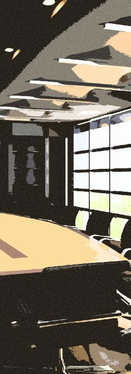
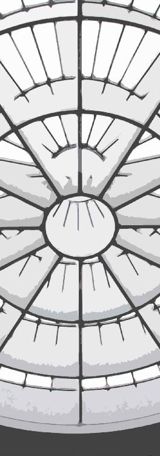
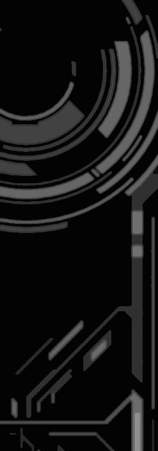

| キミはキメラ 隠遁者の夜明け (StarGazer) | |
| hoshimi12（ほしみじゅーに） | |
| stargazer (2016) | |
キミはキメラ 隠遁者の夜明け
hoshimi12（星見拾弐）
登場人物
＃１ 夜明

夜、ひとけのない住宅街を歩いていく。
目的地があるわけじゃない。これは散歩、せめてもの運動だ。
日光に弱いのと、人目を恐れるあまり、夜にしか外へ出られない。
端的に言えば、おれは無職のひきこもりだった。
（いつからだろうか、こんな生活になったのは）
小学校時代、『下の名前がヘンだ』というくだらない理由からいじめられ、エスカレーター式で進学した中学校でもそれは続いた。
高校時代はさほど記憶にない。
なるべくヒトと関わらないようにし、ひたすら勉強に励んでいた。
そしておれは「いい大学」に進学した。
でも結局......気がついたら引き篭もっていた。
（どうしてこうなった）
おれの両親は科学の徒でありながら、熱心な宗教の徒でもあった。
神が創りし法則を解き明かすことで、神の存在を証明したい――
そんなことを本気で考えているような人間たちだった。
そして子であるおれにも、神への信仰を強要した。
教会に足繁く通わせ、何度も神に祈らせた。
幼いおれは両親の言葉を固く信じ、本気で神に祈った。
だが結局どうだ。
おれは引きこもりのクズに成り下がり、どこまでも神はお救いにならなかった。
『人生に不幸を感じるのは、お前の信仰心が足りないせいだ』
疑い始めた者たちを責める常套句。
もはや耳に届かなかった。
やがておれは、何も信じられなくなった。
◆
毎日静かで穏やかだ。
誰からもいじめられない。
勉強もしなくていい。
教会で祈らなくてもいい。
一日中、自由時間だ。
......でも着実に、心が蝕まれていくのがわかる。
夜の散歩の途中、おれは暗い公園に立ち寄った。
一本桜が散りかけている。
桜の幹に、微かな痕がついている。
先月、ここで若者が首を吊った。
ブラック企業の重労働で精神を壊し、この世に絶望したらしい。
（真面目に生きるなど、くだらないことだ）
（おれもいつか、こういうことをするのか）
変わらない孤独な毎日。
いつしか「死」を意識するようになっていた。
別に死にたいわけじゃないが、勝手に脳裏をよぎるのだ。
役立たずの種を、世界の理が殺そうとしているのかもしれない。
だがそんなおれに、転機が訪れた。

その日のおれは、日課のゲームをして過ごしていた。
今時珍しいレトロＲＰＧ。
ＲＰＧの世界は単純だから好きだ。
ヒーローがいて、ヒロインがいて、敵がいて、敵を倒せばゴールドがでて、村人に話しかければフラグが立つ。
まもなくラスボスというところだった。
家のチャイムが鳴り、おれはビクリとした。
いまは午後三時頃。平日。
何かの宅配だろうか。
（なんにせよ、居留守に限る）
玄関には宅配ボックスもあるし、両親が仕事から帰ってくれば対応するだろう。放っておいて構わない。
おれはモニターに向き直り、またゲームパッドをポチポチしはじめた。
ひきこもりは人目が恐いからひきこもりなのだ。
だが――
ピンポンピンポンピンポンピンポンピンポンピンポンピンポンピンポンピンポンピンポンピンポンピンポンピンポンピンポンピンポンピンポンピンポンピンポンピンポンピンポンピンポンピンポン。
とち狂ったようにチャイムが連打された。
ドアもドンドン叩かれる。
（なんだなんだ!?）
通常ならざる事態におれは困惑した。
何かの事件の報せだろうか。
近所で火事が起きたとか、それとも両親に何かあったとか。
おれはいよいよパッドを置いて、玄関へ向かった。
一瞬悩んでから、ドアを開ける。
「うわっ、びっくりした」
驚いたのはこっちだというのに、開けた先にいた若い女がおれを見て声をあげた。
女はおれと同じくらいか、少し年上だろう。
黒いマタニティドレスを着た、妊婦だった。
（なんだ......？）
日の光で目が眩んだのだろうか。
おれは一瞬、現実ではありえない光景を見た。
妊婦の身体から、「黒い煙」が立ちこめているように見えたのだ。
まるで深い闇を身に纏っているかのような......。
そしてそれは酷く、背徳的な姿に見えた。
「ん～～？ ちょっとあんた大丈夫ぅ？」
妊婦がおれの顔を覗き込みながら言った。
おれは慌てて目を擦り、改めて妊婦を見やる。
そこにはもう黒い煙などなかった。
それからおれは状況を再確認した。
（知らない、女だ）
困惑を極めた。
両親の知り合い？ だとしても一体なんの用なんだ。
「あ――ぅ――」
疑問が脳裏を過ぎるが、うまくそれを言葉にできない。
ここしばらく誰かと会話した覚えがなく、発話の仕方を忘れている。
「あんたが春原理科雄？ 居るならさっさと出てきなさいよねぇ」
妊婦はニヤリと笑いながら言った。
春原理科雄。おれの名前だ。
科学を愛する両親がそう名付け、ヘンな名前だと子供時代にいじめられ、おれの得意科目はすべからく文系であった。
「な、なにか、ごようですか」
ようやく出た言葉らしい言葉は案の定詰まった。
久々の発話という以上に、おれは緊張した。
異様な存在感を放つ女だったのだ。
こう、なんというか、普通と「オーラ」が違う。
一言で言えば、禍々しかった。
「ん～。たまたま近くを通りかかったから、かるく挨拶をと思ってね。親御さんに聞いたら家にいるっていうし」
「あいさつ......？」
「ええ。あんたの遺伝子、ちょっと使わせてもらったから」
女は膨らんだ腹をさすりながら言った。
子を愛でる仕草でありながら、酷く歪んだものに見える。
「は？」
言葉がすぐには頭に入ってこなかった。
あまりにも軽い言い方だ。
まるでペンの一本でも借りたかのようなノリである。
「おれの遺伝子を、使った......？」
「そう。昔、血とか細胞とかとられたでしょ。研究に使うって言われて。両親から聞いてない？」
「え。いや、その」
視線を斜め上にやって記憶を辿る。
そう言えば子供の頃、科学の未来のためだとか言って、どこかの病院に連れていかれたことがある。
そこでいろいろ検査して、血もとられた。
代わりにおれはいつもより小遣いを多めにもらった。
「遺伝子を使ったって、なにに」
思わず女の腹を見つめていた。
かなり大きく、そろそろ出産も近いことだろう。
まさかと思うが、
「そうそう、この子にもね」
この子に「も」......？
「まあ使ったっていっても、ほんの一部よ？ 私、遺伝子治療の研究やってて、それに使わせてもらったの」
遺伝子治療の研究。
となるとこの女は、どこかの研究者か。
「なにかの、ご冗談ですか」
「え？ なんで冗談なんて言わなきゃいけないの？ なんなら今度、ドナー契約の書類見せてもいいわよ」
女はバッグから名刺をとりだし、おれに手渡した。
クジョウ生命科学総合研究センター。
遺伝子治療研究グループＧＬ・冬城夕子。
「ＧＬってのはグループリーダーのことね。私これでもけっこう偉いのよぉ」
クジョウといえば、電子デバイス・社会インフラ・家庭電器・医療・軍需産業などなどに手を出している大複合企業である。
怪しい妊婦――冬城夕子はせいぜい三十手前の風貌。
この若さで１グループのリーダーを任されるとは、余程の切れ者ということか。
（遺伝子治療......）
一応単語は聞いたことがある
確か、遺伝子を操作して、先天性の障害などをなくすための研究だとか。
命を弄るという性質上、倫理的な問題も指摘されている。
「赤の他人の遺伝子を......我が子に混ぜたんですか」
「ええ、そうよぉ。なにか問題ある？」
「いや、その」
「あ～～、あんたんちって宗教やってんだったっけ」
冬城夕子はひどくバカにしたような言い方をした。
おれに対してというより、その思想に対して強い嫌悪感を抱いているらしい。
「生命倫理なんてクソ食らえよぉ。あんたの両親もそこらへん気にしてたけど、結局は端金に目が眩んだみたいだし。だいたい、異教徒をさんざ虐殺して迫害してきた連中に、倫理なんて説かれたくないわ」
おれはハッと顔をあげた。
この女、とんでもないことを言いやがる。
おれの両親を貶めたばかりか......。
神を、畏れていないのか。
「病気があるより、ないほうがいいでしょ？ 劣っているより、優れているほうがいいでしょ？ 遺伝子操作の何が悪いのよ。んなもん禁じたってこの世から格差なんてなくなんないわ。弱者は消え、強者が生き残る、むしろ自然の摂理そのものでしょう」
おれは何か言い返してやりたかった。
あんたは酷いヒトだ。
そんなのが自然の摂理であってたまるか。
弱者にだって生きる権利はある。
発言を撤回しろ。
（おい、どうした。言えよ）
言葉は脳裏を過ぎったが、おれは何も言い返せなかった。
何故かって。
おれは根性無しの弱者だったからだ。
「研究について詳しいことを聞きたければ、今度連絡してちょーだい。あー、連絡するなら早めにお願いねぇ。しばらくしたら忙しくなるから。アディオス」
そう早口に言って冬城夕子は去っていった。

その後、おれは呆然と自室に戻った。
つけっぱなしのモニターがニュースを垂れ流している。
おれはぼんやりとそのテロップを見やる。
『ｅラーニングが生んだ天才少女・ヒメノちゃん』
小さな子供がオンライン講義でメキメキと頭角を現し、大人に混じっていろいろなセミナーに参加している――とかなんとか。
すでに色々な大学から声が掛かり、将来を有望視されている......。
（どうでもいい）
おれはモニターの前に座り、ニュースを切って検索窓を表示した。
クジョウ生命科学総合研究センター。
検索窓に打ち込んだらすぐに出てきた。
遺伝子治療研究グループとやらも実在する。
冬城夕子という女も、不敵な笑顔を浮かべた写真付きで載っていた。
（詳しく聞きたければ、連絡しろって言ってたよな）
自分の遺伝子を研究に使われた。
遺伝子治療研究......具体的な用途は一体何なのだろう。
腹の子供にも使ったと言っていたが。
（（関わるな。あの女は何かヤバい））
本能が恐怖心を煽る。
だがそれ以上に、何かが燻っている。
「なんなんだあの女は......」
無遠慮かつ大胆不敵。
神をも恐れぬ傲慢さすら感じた。
そして受胎者にそぐわない禍々しさがあった。
「神に見放されたおれに、悪魔が近づいてきたのか......？」
モニターの前でぶつぶつとしゃべり続ける。
変わらない暗い日常。
朝から晩までゲームをし、何も生まず、夜は街を徘徊する。
もう嫌気が差していた、このくだらない人生に。
（もしかしたら、何かが変わるかもしれない）
突き動かされるものがあった。
死の近くで見た闇が、おれには光に見えた。

数日後。
おれはヒゲを剃り、髪を刈って家を出た。
窓越しでない太陽は異様に眩しく感じた。
おれはキャップを目深に被り、せめてもの日除けをする。
うつむき気味に街を歩いていく。
太陽だけでなく、ヒトの視線も恐かった。
（誰もお前なんかに興味はない）
そんなことわかっているはずなのに、ついオドオドしてしまう。
日中の街はほんとうに苦手だ。
眩しくて、うるさくて、何よりヒトがごちゃごちゃしている。
いろんなニオイがぐちゃぐちゃに混ざり合っている......。
（帰りたい）
イヌやネコでさえ知ったニオイがなければ不安なのだ。
人間だって所詮は動物、知らないニオイに囲まれたら不安になる、当然だろう。
とにかくおれは、人混みが大嫌いだった。
キャップのツバで視線を隠し、小走りに走るその姿はまさに不審者そのものだったに違いない。

やがて待ち合わせ場所の喫茶店「シュプール」に到着した。
「あら、ずいぶんスッキリしたじゃない」
待ち合わせ三十分前に来たはずが、冬城夕子はすでにそこにいた。
先にきて何かの書類に目を通していたようだ。
「遅れて、すいません」
「なに言ってるのよぉ。遅れてないじゃない」
「そ、そう、ですね」
小走りだったせいで息切れしている。
「なに頼む？」
「えっと、紅茶で」
「そう。じゃあ私はカプチーノおかわり」
飲み物はすぐに運ばれてきた。
おれはおそるおそる紅茶をすすった。
「あんた、ひきこもりなんだってね」
思わず紅茶を吹き出しそうになった。
歯に衣着せぬというか。
先日の件といい、冬城夕子は事実や思ったことをハッキリ告げる性格らしい。
「その書類、おれのプロフィールですか？」
「ええ。なかなか勘がいいじゃない。細胞採取までのものと、あと最近のものも取り寄せたわ。個人情報ウンヌンの文句は、ご両親や大学に言って頂戴ねぇ」
冬城夕子は面白そうに書類を眺めている。
「帝都大って、なかなか勉強できたんじゃない」
「まあ......ほどほどですか」
「なんでそんなエリートが、ひきこもりやってんの？」
おれは無意識に唇を噛んでいた。
（こっちが聞きたい）
なんでこんな人生になったのか。
真面目に勉強すれば、いい大学に入れて、いい会社に入れて、いい結婚ができて、いい人生が送れるんじゃなかったのか。
真面目に神に祈れば、不幸を感じることもなく、喜びと安寧に満ちた暮らしができるんじゃなかったのか。
「なるほど。バカがつくほど真面目なのね」
冬城夕子は平然と核心を突いた。
「さて、そろそろ行きましょうか」
「え？ 行くってどこに」
「研究について詳しく聞きたいんでしょう？ だからこれから、研究所へ行くのよ」
◆
喫茶店を出ると、そこには黒塗りの車が停まっていた。
「お嬢......オレはパシリじゃないんスけどね」
車に寄りかかっていた男が不機嫌そうに言った。
小太りで眼鏡の中年。そしてキンキラの「金髪頭」。
どこかのヤクザか詐欺師だろうか。
だが助手席には白衣が置いてある。
「仕方ないじゃな～い。他に運転できるヤツいないんだから。それに私は、み・お・も」
「......余裕な顔してなにが身重っすか。臨月に病院まで送れとか言わんでくださいよ、マジで」
金髪中年男は溜め息をつきつつ、おれを見た。
ぶよぶよの身体だが目つきは鋭い。
「三沢兼次。グループの主任研究員で、私の部下」
「どーも」
三沢兼次は無愛想に答え、さっさと運転席に乗り込んだ。
クジョウ生命科学総合研究センター。
通常は「センター」と略して言うらしい。
病院を思わせる真っ白な外観が印象的だった。
「じゃ、パシリはこれにて」
三沢兼次は軽く会釈し、白衣を羽織って去っていった。
白衣を着ると別人のように凜々しく見えた。
「あれでもけっこう優秀なのよ」
「へぇ......」
「じゃ、行きましょうか」
受付で見学者用の名札をもらい、エントランスをくぐる。
通りかかりの研究員たちは冬城夕子を見るなり小さく頭をさげていた。
彼女がここの偉い人間だというのは本当のことらしい。
「なかなかキレイなとこでしょう」
冬城夕子は誇らしげにセンターを案内していく。
確かにキレイな研究所だった。
外観も白なら内装も白。
エントランスの向こうには緑ある中庭が見える。
ガラス張りの向こうでは、研究員たちが凜々しい表情でなにかの実験やデスクワークを行っている。
（おれも、こういうところで）
子供時代は研究者に憧れていた。
両親にその使命の素晴らしさをよく説かれたものだ。
今となっては夢も希望もないが、白衣姿の人々をみると憧れが蘇ってくる。
研究者の使命――
それは真理の探究と、人類への貢献。
そのはずだった。
「着いたわ」
冬城夕子のラボ（？）はガラス張りではなかった。
中は広くキレイだが、別の部屋に通じるドアもなく、限りなく閉ざされた密室である。
そして出入り口のドアはやけに厳重なセキュリティだった。
「そこのクリーンルームには入らないでね。いろいろ危ないものが置いてあるから」
部屋の１スペースには透明なシートで包まれたクリーンルームがある。
またその中には細胞培養室が置かれている。
「あの、他の研究員の方々は」
「あーー、ここ私ひとり用なのよ。部下は別室でやってるわ」
「すごいですね......。個人でこんな広い部屋使えるなんて」
「あははっ。ワガママ言いまくったからねぇ～」
それから応接椅子に促された。
インスタントの紅茶が出される。
「そいじゃ、すこし講義をしましょうかね」
冬城夕子がＰＣを操作すると、プロジェクターが起動して部屋の白壁に何かが映し出されはじめた。
「うちで用意してる研究説明用のビデオよ。素人への説明はこれがちょうどいいわ」
映像に合わせ、冬城夕子の解説が入っていく。
講義慣れしているのだろうか。
説明する冬城夕子はハキハキしていて、とてもかっこよかった。
遺伝子治療。
先天性の障害などを、遺伝子操作によって治療する技術。
これが発展すれば、人類は限りなく「正常」な人間であふれるという。
生まれついてのハンデに悩むこともなくなる。
確かに宗教的な観点からは許容されない研究だろうが、リスクを恐れる親や、障害に苦しむ人々にとっては救いとなり得る研究だろう。
しかしだ......。
おれは講義を聴きながら、言いようのない感覚を覚えていた。
「ヒトの役に立つ、素晴らしい研究だと思います」
心にもない言葉を使った。
前もって用意していた言葉だ。
せっかく招いてもらって、その研究をこきおろすつもりはなかった。
「あんた、物足りないと思ったでしょ」
冬城夕子は見抜いたように言った。
「今の説明に違和感を覚えたのなら、ぜひその部分を教えてもらいたいわぁ。今後の参考にするから、ね」
冬城夕子に真っ直ぐ見つめられる。
（試されている）
不思議とそう思った。
「失礼だったらすいません」
「気にしないでいいわぁ。無礼講よ」
「......あなたのようなヒトが、弱者のための研究なんてするとは思えません。遺伝子治療は建前ですよね」
冬城夕子の目がカッと見開かれた。
おれは思わず仰け反った。
怒らせてしまったか。
「あっはっはっはっはっ！ よくぞ見破ったわねぇ！」
どこの悪役キャラだろうか。
冬城夕子は実に楽しげに笑った。
「なーにが先天性障害の治療よぉ。んなもん建前に決まってるでしょぉ～」
興奮した冬城夕子は紅茶を一杯あおる。
「私はねぇ、優良種を作りたいのよ」
「ゆうりょうしゅ？」
「ま、簡単に言えば、生物をさらに進化させたいってこと」
「生物を、進化って」
まさかここまでイカれているとは。
治療どころか、生物を進化させるだと？
神にでもなるつもりか。
本気で言ってるのなら、マッドサイエンティストの類だ。
だが、
（どうしてこんなにも、迷いがないんだ）
おれは冬城夕子の持つ得体の知れない「力」に、魅了されつつあった。
彼女の腹には新たな命が宿っている。
まさかこの子が、いま言った優良種なのか？
おれの遺伝情報も使われているというが......。
「ここで働く気はないかしら？」
続けざまの言葉におれは度肝を抜かれた。
「あんたモッタイナイわよ。学歴は十分、遺伝子だってせっかく優秀なのに、狭い世界に閉じこもって。私はね、優れた存在は活躍すべきだと思ってるの」
「え、その」
「実はうち、テクニカルアシスタントが足りてなくてね。用は雑用係なんだけど、実験の基礎は身につくし、お給料もそこそこ出るわ」
「もしかして、おれの両親に頼まれたんですか......？」
そう尋ねると、冬城夕子は微かな不機嫌さを表した。
「だとしても、いま誘ってるのは私自身よ」
「す、すいませんっ」
「まあ、すぐに返事しろとは言わないわ。一週間あげるからよく考えなさい。覚悟さえあれば、歓迎するわよ」
言いながら冬城夕子は書類を渡してきた。
たぶん就職関係の資料だろう。
おれはおずおずとそれを受け取り、部屋を後にした。

帰りはセンター内を見て回って構わないと言われた。
関係者以外立ち入り禁止の区域はべつにあり、営業や見学者用のルートがちゃんと用意されている。
おれはふらふらとセンター内を歩いた。
こんな立派な研究所で働ける人間は、さぞ優越感に浸れることだろう。
劣等感しかなかった人生とも、これでおさらばできるかもしれない。
「やめとけ、ニート」
不意に声をかけられた。
振り返るとさっきの金髪小太り眼鏡、三沢兼次が缶コーヒー片手にベンチに腰かけていた。
低身長で座している状態だというのに、ひどく見下されているような気がする。
「にーと......？」
「なんだよ。今のわけーのはそんな言葉も知らないのか。オレらの時代はなぁ、うじうじしてる無職をそーゆーふーに呼んでたんだよ」
おそらくは侮蔑の言葉なのだろう。
「ロクな仕事じゃねーぞ、ここのは。テクニカルアシスタントなんて言えば聞こえはいいが、ようは都合のイイ雑用係だ。実験動物の糞尿を掃除させられたり、実験で弄ばれた死骸を集めて捨てたり、そんなんばっかりだぜ。どうせ三ヶ月も持たない。オレでもゴメンだ」
単なる嫌味ではないらしい。
冬城夕子から前もって話を聞いていたのだろうか。
「それに、知らないほうがいいこともある」
部外者への明らかな警告。
小太り中年の鋭い目は、一体ここで何を見たのか。
「他にいい仕事なんていくらでもあるよ。まだわけーんだし、こんなところで時間をムダにすんな。じゃな」
三沢兼次は空き缶を捨て、軽く手をあげて去っていった。
一週間の猶予が与えられた。
最初の三日間はひたすら資料に目を通し、クジョウやセンターについて調べあげた。
しかしいくら情報を得ても、決心には結びつかなかった。
四日、五日。
時は刻一刻と過ぎていった。
（どうする）
六日目の夜。
もう返事をするべきだと思ったが、おれはまだ悩んでいた。
『あんたモッタイナイわよ。学歴は十分、遺伝子だってせっかく優秀なのに、狭い世界に閉じこもって。私はね、優れた存在は活躍すべきだと思ってるの』
冬城夕子の言葉を思い出す。
単純にうれしい言葉だった。
遺伝子が優秀だと言われてもピンとこないが、こんなおれをほめてくれた。
一時は、宗教思想を小バカにする態度に怒りを感じたものの、よく考えてみれば、おれはすでに信仰心を失っているのだ。
むしろ冬城夕子の、危険ながら力強い思想に、惹かれ始めてさえいる。
（もし就職できれば）
きっと両親は喜ぶだろう。
だからこそ冬城夕子におれのことを相談したのだ。
二人とも日々おれのことで神に祈っていた......。
しかし。
『だとしても、いま誘ってるのは私自身よ』
不機嫌そうな冬城夕子の顔が脳裏に浮かんだ。
単なる同情ではなく、自分の意思であると言いたげだった。
（自分の意思、か）
ここにきておれは、判断材料を冬城夕子や両親にばかり委ねていることに気がついた。
おれはスリープモードで暗くなったモニターに目を向ける。
そこにはおれの顔が映り込んでいる。
表情は乏しく、目の下にはクマがあり、実に陰気くさい。
こんなヤツが、おれなのだ。
「お前はどうしたい」
おれは闇に映る自分に語りかけた。
「あそこで働きたいのか。あの女のもとで、実験動物の糞尿や死骸に我慢できるのか。お前はあそこで何を得たいんだ」
ぶつぶつと独り言を続ける。
三沢兼次という男の警告が心に残っていた。
その警告は、おれを萎縮させるに十分な効果を持っていた。
だが、
『知らないほうがいいこともある』
おれがその警告から感じたのは、恐怖心だけではなかった。
やがておれは決意を固めた。
（おれは、変わるぞ）
糞尿だろうが死骸だろうが構いはしない。
異様な興奮を胸に、おれは冬城夕子に返事を送った。

数日後、おれは再びセンターを訪れた。
通された応接室に冬城夕子の姿はなかった。
代わりにいたのは、金髪小太り眼鏡の三沢兼次だった。
「お前ぇ......引き受けたのかよ」
三沢兼次はおれを見るなり呆れ顔だった。
「あの、冬城さんは」
「お嬢はきょう来ないぞ。子供うまれて、産休に入ったからな」
「えぇ!? もうご出産されたんですか!?」
「ああ。かなりの早産で、ちょっと大変らしいが」
「そうなんですか......」
「まっ、あのお嬢なら大丈夫だろ。それよりニート、てめぇはてめぇの心配しとけ。今から入社試験すんぞ」
「入社試験？」
そんなものがあるなんて聞いていない。
「オレが決めたんだよ」
三沢兼次はイジワルそうに笑った。
「この程度のことこなせないようなら、大事な研究に関わらせることなんてできねーからな。お嬢にも了解はとってる。おらっ、いくぞ！ ついてこい！」
粗っぽく手招きし、三沢兼次は応接室を出ていった。
おれは慌ててそのあとを追った。
センターの奥へと進んでいく。
廊下の途中には「関所」があり、警備員によって持ち物検査が行われた。
この先よほど重要な場所があるのか。
携帯端末を一時没収され、物々しさを感じながら通過していく。
「お前、自分の遺伝子を使われたってことは聞いてるよな」
「は、はい」
「なにに使われたのか、ちゃんとわかってんのか」
「遺伝子治療の研究、ですよね。あとは......」
「その先も聞いたか」
「えっと、その、『優良種』がどうとか」
廊下の途中、三沢兼次は振り返る。
鋭い目で睨まれる。
「その優良種とやらを、お前に見せてやるよ」
「えっ？」
「お前には知る権利があるからな」
どうやら目的の部屋に到着したらしい。
三沢兼次は鍵を開け、頑強なドアが開かれていく。
「ここは、キメラの檻部屋だ」
「きめら......？」
「お嬢が言ってる優良種のことだよ」
薄暗い部屋だった。
壁には大きく「６」とペンキ塗りされている。
空気は生ぬるく、なにやら凄まじく臭う。
「くっせーだろ。コイツはかなりニオイ出すやつだからな。まあ空調の調子がわりぃってものあるけどよ」
さらに奥へと進んでいく。
そこには確かに、檻があった。
中に、何か――
「よく見ておけ。これがお嬢の言ってた優良種の姿だ。そんでもって、お前の遺伝子が使われた存在でもある」
そこにいたのは、よくわからない動物だった。
茶色の毛並みでふかふかしている。
一瞬イヌのように見えたが、どうも違う。
前足はイヌそのものだが、後ろ足に鳥の鉤爪。
鋭い嘴があり、頭部から角が生えている。
瞳孔はネコのそれのようだ。
やがてこちらを威嚇するように甲高く鳴いた。
「このチグハグなバケモノが、優良種キメラだよ」
三沢兼次は忌ま忌ましげに言った。
おれはというと、その異形――キメラから目をそらせなかった。
（これに、おれの遺伝子が使われたのか？）
全身の毛が逆立つのを感じた。
あまりの恐ろしさに声がでなかった。
「ハッキリ言うぞ。このセンターは、神をも恐れない、非人道的な研究を行っている。そしてお嬢は――冬城夕子は狂ってる。こんなバケモノを、優良種だのと言って可愛がってるんだからな」
三沢兼次は敵意の滲ませつつ言った。
見てくれはアレだが、案外常識人なのかもしれない。
しばらく前のおれなら全面的に同意していただろう。
だが、
（あのヒトは、神に成り代わろうとしているのか）
おれは妙な興奮を感じていた。
スカッとしか爽快感すら覚えていた。
何故かって？
それは、今までおれを見放し続けてきた神が、あの冬城夕子という研究者によって、完膚なきまでに侮辱されているからだった。
（神は、死んだ）
あまりの背徳感に身悶えそうになる。
「さて、入社試験だが。カンタンな二択問題だ」
三沢兼次は言い、ポケットから何かを取り出した。
ぺらぺらの布......いや、腕章だ。
クジョウ生命科学総合研究センターの、職員としての証。
「これを受けとるか、ここから出ていくか。あとはてめぇで決めろ」
腕章が差し出される。
背後には出口がある。
キメラがキンキン叫び、おれを急かす。
「お前......どうして笑ってる」
「え？」
言われて気がついた。
いまおれは、口元を釣り上げ、笑っていたらしい。
「――ったく、てめぇもそっち側の人間かよ」
三沢兼次が小さく悪態をつくのが聞こえた。
やがておれは、力強く腕章を掴みとった。
＃２ 間昼

その日からおれの生活は一変した。
教育係の三沢兼次に付き、いろいろな仕事を覚えていく。
「お前の仕事はな、オレたち本業の研究者が、研究に集中できるようにすることだ。実験動物の世話、道具や試料の発注と受け取り、ルームの掃除、宴会の手配、そういう雑務をこなしてもらう。言っちまえば『召使い』だな」
「召使い、ですか」
「そうだ。下僕だよ下僕」
ぶっきらぼうに言いながら、三沢兼次の教えは丁寧だった。
センター内のことを熟知しており、説明にムダがない。
「わかんねーことがあったらすぐに聞け。メンドウだが、余計なミスされるよりそっちのほうがよっぽどマシだ。物覚えが悪いならメモしとけよ」
メモ片手に三沢兼次の後ろをついて回る。
こうして隅々まで歩いてみると、改めてセンターの広さを思いしらされる。
「さて、ここから先がセンターの裏エリアだ」
「裏エリア？」
「危ないもんや、見られちゃまずいもんを置いてるとこだよ。お前もこの前行っただろ、関所通って、あのバケモノがいる場所に」
「ああ......あそこですか」
「お嬢の研究は、もっぱら裏で行われてる。で、お前もオレらんとこに所属する以上、表と裏を行き来することになる。当たり前だが、秘密厳守だ。もし外部に漏らしたりしたら命の保証はねーぞ」
「命の保証って」
「歴史ある大企業クジョウ様を舐めんなってことだ」
真顔の三沢兼次に連れられ、関所で専用のカードを受けとった。
これを使えば自由に表と裏を行き来できる。
「クジョウは身内に甘いが、裏切り者には厳しい組織なんだ」
おれは唾を飲み込み、心のメモに書き込んだ。
裏切りは決して許されない。
「おい三沢、誰だそいつは」
廊下を歩いていると中年の警備員に出くわした。
中年警備員は露骨におれを睨んでいる。不審者にでも見えたか。
「うちの新人ですよ」
「新人？ こんな犯罪者面が研究者か」
犯罪者面......。
三沢兼次も大概だと思うが。
「いや、テクニカルアシスタントのほうっすよ」
「ん？ じゃあ、話にあったニート野郎か」
ニート野郎......。
もう散々な言われようである。
そして身元がハッキリしたというのに、中年警備員は敵意剥き出しのままだった。
足の先から頭の天辺まで、じろじろと舐めるように見られる。
「貴様」
極めつけは貴様呼ばわりか。
「貴様、お嬢様に迷惑をかけたらタダじゃおかんからな。貴様のような社会のクズが、神聖なるクジョウの地を踏むなど、本来あってはならんことだ。お嬢様の慈悲深さに感謝しろ」
凄まじい殺気だった。
お嬢様。冬城夕子のことだろう。
殺気と共に強い忠誠心を感じさせる。
「じゃあ、巡回に戻る」
中年警備員は帽子を整え、踵を返した。
後頭部は白髪雑じり、三沢兼次より幾分年上か。
「なんなんですか、あのヒト」
「お嬢――というか株式会社クジョウの〝信者〟だよ」
「信者って」
「つまり、おめーと同類だよ」
同類。
あんなガンコで盲目なオッサンがおれの同類だと？
カンベンしてほしい。
「あのヒトはあんま怒らせねーほうがいいぞぉ。口より先に手が出ちまう、良くも悪くも古いタイプのオッチャンだからな」
「......身内に甘い会社なんじゃないんですか」
「ハハッ。まだお前は新人だからな。身内に甘いってことは、裏を返せば排他的なんだよ。こういうムラ社会にも慣れてってもらわないと困るぜ」
三沢兼次はニヤリと笑い、先を進んでいった。

「お前、動物飼ったことあるか」
「いえ......ないです」
「そっか。まあそっちのほうがいいかもな」
やがて辿り着いたのは、例のキメラがいる部屋だった。
「お前にはこいつの世話もしてもらう」
「こ、これのですか」
「そうだよ。エサは朝晩二回、檻の掃除は毎日しろ。こいつらキメラは、なかなかデリケートでな。環境が悪いとすぐに弱っちまう。な～～にが優良種だって感じだ」
三沢兼次はぶつくさ言いながらエサやりや檻掃除の仕方を教えていく。
キメラに対してあまり良い感情を持っていないのは確かなようだ。
「情は移すなよ。こいつらはあくまで実験動物、使い捨ての研究材料だ」
「使い捨て......」
「だから、情は移すな。お前も一応研究者の端くれになるんだから、『オレは科学の未来のためにやってるんだ』って、強く思い込め」
おれは小さく頷き、メモ書きを走らせていく。
エサは機械が自動供給、週一で袋を交換。
檻の掃除は、エサでキメラを別の檻に誘導し、その隙にやる。
「掃除は手作業なんですか？」
「ああ。ただのモルモットの檻なら、業務用の水洗機にでもぶち込んどきゃいいんだが......。こいつの場合はでけーし、なによりウンコとションベンが重要なんだ」
「えっ、ウンコ？」
「ギャグで言ってんじゃねえぞ。こいつらキメラはな、特殊な『フェロモン能力』を持ってんだ。で、その状態を見るには、糞尿を検査するのが一番手っ取り早い。特殊なエサを与えて、どんな影響がでるのかとかな」
「フェロモン......。雌イヌが雄イヌを誘うときに出すようなやつですよね。なんか、ニオイ的なものというか」
「そうだ。ただフェロモンつっても色々あって、行動を誘発するタイプと、相手の体内を弄くるタイプに大きく分かれる。後者のほうが上位的な能力だ」
「体内を、弄くる......？」
「相手の内分泌系――ホルモンに働きかけて、自分の都合のイイように作りかえちまうんだ。たとえば女王蜂なんかは、他のメスの生殖能力を奪って、働き蜂に作りかえたりする」
おれは言葉を失った。
行動を誘発するばかりか、相手の体内まで弄くりまわす......。
なんだかよくわからないが、恐ろしい能力のように思えた。
「ははは。まっ、影響あんのはもっぱら同種の個体だけだけどな。ムシケラの女王蜂がどんなに頑張ったって、人間様を働き蜂にできるわきゃないだろ？」
三沢兼次は笑いながら答えた。
◆
檻の部屋で三沢兼次の説明がつづく。
おれは淡々とそれをメモにとっていく。
「ちなみにこいつの能力は『集合フェロモン』。行動を誘発するタイプで、同種の個体を呼び集めるものだ。けっこうえげつねぇ拡散力でよ、数十キロ離れた仲間にすら影響しちまうらしい」
「すごいですね......」
「ああ。だからこそ隔離されてんだよ。前に空調が壊れたときはホントえらい目にあったぜ」
おれは檻のキメラを振り返った。
キメラは檻の隅で大人しくしている。
おれたちの話を聞いているのだろうか。
ときおり天井の空気孔を見上げ、すこし寂しげにも見える。
空気孔は「光ダクト」にもなっており、外の自然光が微かにだが漏れている。
外が恋しいのだろうか。
（情は、移すな）
おれはさっき受けた忠告を反芻した。
いちいち同情していたら精神がもたないだろう。
それにこいつらは、通常ならざるバケモノなのだ。
「高い知能と特殊なフェロモン能力が、優良種の証ってわけですか」
「それだけじゃねぇ。加えてこいつらは長寿命なんだよ」
「長寿命？ 何年生きるんですか」
「わからん」
「わからない？」
「異様に性成熟が早く、老いる気配がない」
三沢兼次の声に微かな怖れが滲んでいた。
「とにかく、こいつらはフツーじゃねーってこった」
「は、はあ」
「よっしゃ。次いくぞー」
大方説明が終わったのか、三沢兼次は部屋を出ていった。
おれもすぐその後に続いたが、一度だけキメラを振り返った。
高知能、長寿命、特殊なフェロモン能力――
羨ましさは感じなかった。
こんな風に閉じ込められてしまうのなら、無力で愚かなほうがずっと幸せに違いない。

ラボや関連施設にも顔を出し、職員たちに挨拶をしていく。
三沢兼次が簡単に紹介をしてくれた。
だが職員たちはさほど興味なさそうだった。
センターのテクニカルスタッフはかなりのハード職らしく、すぐに辞める人間が多い。情など移しているヒマなどないのだろう。
「お前はどうなるかねぇ」
三沢兼次に生温かい目を向けられる。
「正直、オレにはお嬢の考えが理解できねーんだ。天下の帝都大っつったって、なんでお前みたいなニート野郎をテクニカルスタッフに選んだのか。裏の仕事だって見せなきゃならんわけだし」
「すいません」
「お前が謝る必要はねーんだけどな。ただの情けか、もしかしたらあえての起用かもしんねぇけど」
「あえての？」
「お前、社会から断絶してた人間だろ。そういう人間のほうが使いやすいと思ったのかもな、お嬢は」
おれは眉をひそめた。
三沢兼次は、たびたび冬城夕子を悪く言う。
おれを悪く言うだけなら気にしないが......。
「感謝してるんですよ、冬城さんには」
「ん？」
「とにかくおれ、がんばりますんで」
「あらまぁ。純粋だねぇ」
三沢兼次は嫌味っぽく笑う。
おれはそれを無視し、メモ書きを読み返していく。
辛い仕事だったとしても、耐えなければならない。
おれが弱音を吐いて諦めたりしたら、それこそ冬城夕子が悪く言われるだろう。
「まあ......そっちのほうが幸せかもな」
三沢兼次は頑ななをおれを見て小さく呟いていた。
何かの含みを感じたが、この時のおれは深く考えなかった。

時間は濃密に、慌ただしく流れていく。
一週間、二週間、三週間、一ヶ月。
教わった仕事をガムシャラにこなしていく。
元ひきこもりの身体には、あまりに過酷な日々だった。
「召使い」として扱われる精神的疲労すら感じるヒマはない。
もっぱら仕事は肉体労働である。
業者から荷物が届けば、それを受け取りラボへ運ぶ。
大きなダンボールを台車に積み、何度も往復する。
実験動物の世話も重労働だ。
とりわけ、キメラの世話は過酷を極めた。
激臭を放つ糞尿を採取し、ラベリングしてラボへ運ぶ。
大型ゆえに水洗機は使えず、檻の掃除は手作業で行わなければならない。
キメラはかなりの大食らいで、話に聞いていたよりも頻繁にエサ袋を変える必要があった。
エサ袋は数十キロあり、それを運ぶのも人力である。
おれは次第に疲弊し、やつれていった。
三沢兼次の忠告が今になって身に染みる。
「これは確かに......大変な仕事だな」
正午過ぎ、おれは檻部屋のなかでヘナヘナっと座り込んだ。
檻のなかではイヌだかネコだかトリだかわからないモンスターが、オモチャを転がして遊んでいる。
（こいつの他にも、キメラはいるんだよな）
おれが担当するキメラはこいつだけである。
話によると複数匹いるようだが、詳しくは聞かされていない。
「うるさいぞ、おまえ......」
檻のキメラがオモチャ相手に興奮して喚いている。
劈くような金切り声。
身体も大きく、がったがったと檻が揺れる。
恐ろしい限りだ。
檻は丈夫にできているが、もし突き破ってきたら......。
「だまれって言ってるだろッ、化け物ッ！」
疲労で追い詰められ、おれは思わず声を荒げた。
壁際のボックスからそれを取り出す。
護身用に設置されている麻酔銃だ。
「人間様の言うこと聞かないなら、おまえらなんてな――」
そこまで呟き、おれは言葉を失った。
檻のキメラは静かにし、おれをじっと見つめていたのだ。
あまりに澄んだ瞳だった。
高い知性すら感じられた。
「くそっ......」
おれは麻酔銃を元に戻し、くずおれて頭を抱えた。
『このセンターは、神をも恐れない、非人道的な研究を行っている』
三沢兼次の言葉を思い出した。
あの時は、そこまで深く考えなかった。
しかし今になって思えば......。
（おれは、恐ろしい実験に荷担しているのではないか）
恐怖のあまり身体を抱えた。
無意識に両手を組み、裏切ったはずの神に祈った。
と、その時だった。
ガチャリと部屋の扉が開かれた。
◆
「あら、あんた」
そこに居たのは冬城夕子だった。
おれは目を見開き、硬直した。
（聞かれたか......？）
一瞬そう思ったが、すぐに考えを打ち消した。
ここは壁が厚く、中の声は外に届かない。
仮に悲鳴をあげても、決して外には聞こえないだろう。
「あらあら、お疲れみたいねぇ。聞いたらけっこう頑張ってるみたいじゃない」
「あ、ありがとうございますっ」
おれは慌てて姿勢を正し、頭を垂れた。
そこで気がついた。
しばらくぶりにみた冬城夕子は、腹が凹んでいた。
出産したのだから当然である。
「あの、体調はもうよろしいのですか？」
「ええ、もうすっかり。子供もなんとか元気にやってるわ」
「そうですかっ、よかった！」
自分の子供などではないのに、おれは心底安心した。
遺伝子の一部を使われたと聞いて、ただの他人とは思えないのかもしれない。
「この子の様子はどう？」
冬城夕子は檻に近づいて言った。
この子――キメラのことか。
まるで我が子を想うような響きを感じた。
「元気ですよ。ただ、オモチャをいくつも壊すんで、手を焼いてます」
「へぇ～～。前までぜんぜんオモチャで遊ばなかったのに。食欲は？」
「......めちゃくちゃあります」
おれは溜め息をつきながらデスクへ向かう。
エサやりノートを手に取り、夕子に手渡す。
「すごいわねぇ！ めちゃくちゃ食べてるじゃない。この子ぜんぜん食欲なかったから心配してたのよ」
「そうなんですか」
「あんた、飼育員の才能があるんじゃないの？」
冬城夕子は真顔でそんなことを言った。
おれは苦笑いする他なかった。
「あんたもうランチ食べたの？」
「いえ、まだです」
「じゃあちょっと付き合いなさい。私もまだなのよ」
おれは歓喜し、大きく返事をした。
喜んだはいいものの、何を喋っていいかはわからなかった。
今のおれは、冬城夕子を天上人のように想い、敬っていた。
暗がりから救い出してくれたことへの感謝だけではない。
その業績や異能っぷりを知るにつれ、深まっていく感心がある。
このヒトには、傲慢さに見合うだけの能力があるのだ。
「どうしたのボーっとして？」
「あっ、いえ。すいません」
冬城夕子を見つめてしまっていた。
別段美人に感じるわけでも、異性として意識するわけでもないのに。
おれは完全に、冬城夕子に魅入っていた。
神というアイデンティティーを失ったおれにとって、その存在は絶対的なものになりつつある。
「ここの食堂、なかなか味いいでしょ」
「は、はい」
「前はくっそ不味かったんだけど、私がアレコレ注文してね。そっからだいぶマシになったのよ」
「そうなんですか。ありがとうございます」
「あはは。ありがとうございますってのも何かヘンね」
食事中の冬城夕子は異様に姿勢がよかった。
ナイフやフォークの捌き方も、おれなんかとはぜんぜん違う。
（もしやこのヒト、めちゃくちゃイイ家の出なんじゃないか？）
言葉遣いはともかく、動作からは気品を感じた。
何より、相手に対して一切臆することがないのだ。
三沢兼次だって「お嬢」とか呼んでいるし......。
「仕事はどう、続けられそう？」
「えっ」
一瞬言葉に詰まった。
また見蕩れてしまっていた。
「は、はい。皆さんよくしてくれますし、三沢さんも丁寧に教えてくれるんで。......がんばって続けます」
最後の一言は、自分に言い聞かせるように呟いた。
冬城夕子はニヤリと笑っていた。
「あらそう。じゃあがんばんなさい。推薦した身としても嬉しいわ」
「ありがとうございます」
「それにしても、なかなか根性あるのねぇ。あんた最初見たときから見所があると思ってたのよ」
「見所、ですか」
「根性ひん曲がってそうな『気』を感じたというか。そういうヤツって、ある一点にかけてはすごい根性がすわってたりすんのよ。私の持論」
「は、はあ」
「とにかく、期待してるわよ。っつっても雑用だけどねぇ」
「いえ！ もったいないお言葉です。精一杯がんばります！」
おれは深々と頭を垂れた。
やがて冬城夕子は思い出したように言った。
「あ、そうそう。私またすぐ育休に入るのよ」
「育休......？」
「きょうはあの子の様子を見にきただけで、これから実家へトンボ返り。三年は戻ってこれないわ」
「そうなん、ですか」
三年の育児休暇。
おれは内心で深く残念に思った。
「あの子の世話、よろしくね」
冬城夕子の真っ直ぐな眼があった。
有無を言わさぬ力強さをもっている。
「わかりました」
おれは深く頷いた。
冬城夕子の願いを断れるはずもない。
元々この命、冬城夕子に拾われたようなものだ。
化け物の世話だろうが何だろうが、やってやる。
「冬城さんも、子育てがんばってください」
「ええ。ただちょっと、『冬城さん』ってのはやめてもらっていいかしら。実はその名字気に入ってなくてね。普通に『夕子』でいいわよ。みんなにもそう呼ばせてるわ」
「そ、そうなんですか。じゃあ――」
口のなかで『夕子さん』と呟いてみる。
だがどうも違和感があった。
「夕子様も、お元気で」
「夕子様？」
「おかしいでしょうか」
「あはははっ、おかしいでしょ。でもまあいいわ夕子様で」
冬城夕子は人目をはばからず大笑いした。
おれも釣られた微笑んだ。
（このヒトは、おれに差した光だ）
そしておれは心密かに、冬城夕子への忠誠を誓った。

数日後。
場所は同じくセンターの食堂。
「お前、まさかお嬢に惚れたのか？」
タイマンでランチを食っている時に三沢兼次は言った。
食堂ランチ派はラボでおれたち二人だけである。
「なんですか、急に」
「いや、お前の心酔っぷりを見てると心配になってきてな」
三沢兼次は大まじめな顔だった。
「言っとくがお嬢は旦那もいるし、そもそもめちゃくちゃヤベェ女だぞ」
「知ってます。というか、何か誤解されてるみたいですけど、おれは夕子様を異性として意識してるわけじゃありません」
「ゆうこさま......」
「おれにとってあの人は、光みたいなものなんですよ」
「うべぇ～～」
三沢兼次はさも気持ち悪いものを見たような声をあげる。
「お嬢が光なら、おめぇはなんなんだよ。小虫か？」
「それで構いません」
「うべぇ～～」
「そういえば一つ、聞きたいことがあるんですが」
「ん、なんだ？ お嬢のスリーサイズか？ ムネと態度だけはデケぇよな」
「もしかして旦那さんと、うまくいってないんでしょうか」
「はぁ？」
「あ、いえ。前に夕子様とお話したとき、『冬城』という名字を気に入ってないような言い方をされてたので。もしや家の事情が複雑なのかなと」
「あ～～......それは......」
三沢兼次は目を逸らし、バツが悪そうな顔をした。
「家の事情が複雑ってのは確かなんだが......旦那とは仲良いはずだぞ。というよりゾッコンだろ。昔馴染みでお嬢のほうからプロポーズしたって話だ。それで婿にとった」
「そうなんですか」
嫉妬、ではないと思う。
ただなんとなく想像がつかなかった。
あの冬城夕子が見初めるほどの人物......。
よほどの超人だろう。
「というか、婿をとったなら名字変わってないはずですよね」
「まあ、な」
三沢兼次は歯切れの悪い返事をしたあと、「まっ、ほとんどみんな知ってるし、言っちまっていいかね」と呟いていた。
「実はあの『冬城』って名字、偽名なんだよ」
「えっ？」
唐突なことに理解が追いつかなかった。
「いや......偽名というか、通名かね。ワケあって母方の姓を名乗ってる」
「ワケって」
「イイトコのお嬢様なんだよ。で、その姓だとヘンな色眼鏡がついちまうからって、職場ではわざわざ変えてるらしい。......ほとんど意味成してねーけどな」
「そんな由緒正しい珍しい名前なんですか？」
「珍しいというか、そういうことじゃなくて。ほら、ここまで言えばわかるだろ？ 勘のわりぃやつだなぁ」
「？」
おれは首を傾げ、しばし考えた。
イイトコのお嬢様。
その姓だと職場でヘンな色眼鏡がついてしまう。
「あっ」
おれはようやく気がついた。
すると三沢兼次も察したのかニヤリと笑った。
「まさか、クジョウの......？」
「せーかいです」
三沢兼次はおどけて頷いた。
「九條本家の一人娘、九條夕子。だからクジョウでワガママ放題できるってわけですねぇ。やってらんねーぜ」
「マジすか」
「マジだよ」
天上人のように思っていたが、まさか本当にクジョウの天上人だったとは。
だからといって忠誠心に違いが出るわけでもないが、おれは改めて冬城夕子――もとい九條夕子の格の違いを思いしらされた。
センターの皆々が妙に九條夕子に恐縮しているかと思えば、そういうことだったのだ。
「三年間は戻ってこねぇからな。これでようやく羽が伸ばせるぜ」
三沢兼次は「ん～～！」と大きく伸びをする。
おれはガラスコップの水面を見つめながら、しばらく言葉を失っていた。

一ヶ月、二ヶ月、三ヶ月、四ヶ月、五ヶ月――
あっという間に半年が経った。
覚えることが山ほどあり、時の流れを気にする余裕もない。
生まれて初めてまとまった給料が入ったが、使う時間などありはしない。
起きては出かけ、帰っては学び、風呂に入ってさっさと眠る。
まるで仕事のためだけの奴隷である。
「ウォォン！」
キメラが甲高く鳴いた。
ここは檻のある部屋。
どうやら椅子に腰かけまま気を失っていたらしい。
昨夜も遅くまで調べものをしていて寝不足だった。
「なんだよ......」
おれは気怠さ全開で語りかける。
キメラはまるでお構いなしな様子で、くいくいと顎で何かを指し示している。
そこにはウンコが落ちていた。
汚いから早く拾えと言っているのだ。
「お前のウンコだろ。自分で片付けろ」
「クォォォォンッ!!」
「わかったわかった......今やるから」
おれは促されるままに檻の掃除を済ませる。
また、キメラの毛並みに干からびたウンコの欠片を見つけ、愛用の十徳ナイフのハサミでちょきんと切りとり綺麗にする。
それから再び椅子へ戻り、深く溜め息を吐いた。
「......どっちが飼われてるんだか、わかんないな」
おれはゲンナリとした。
しかしだ。
（こんなに一生懸命になれるとは）
胸の奥にかすかな驚きがある。
そしてやはり九條夕子に感謝した。
疲労こそあるが、同時に「生」も感じている。
今のおれは間違いなく生きている。
「まあ、あれだ。これからよろしく頼む」
檻のキメラに語りかける。
理解したのかしてないのか、キメラはクォンと鳴いてみせた。

ようやく仕事に慣れはじめた頃。
おれはセンター近くの職員寮に引っ越した。
実家を出ていくとき、母は涙を流し、父もまた目を潤ませていた。
長年引き篭もっていた一人息子がついに巣立った、それが嬉しくてたまらなかったようだ。
しかし最後まで、
『神のお導きだ』
と、神への感謝を怠らなかった。
両親にしてみれば、おれの努力や勇気もまた、神の御業なのである。
子供の頃はそれでずいぶん苦悩させられたものだ。
どんなにがんばっても、すべて「神様のおかげ」にさせられる。
だがもう、どうでもよかった。
おれにはすでに、神に代わる存在がいるのだ。
（全ては、夕子様のために）
信仰心や忠誠心をもつことに疑問は抱かなかった。
おれはもとより、そういう存在に依存して生きてきたからだ。
持たざる者。弱き者。
光がなければ、すぐに枯れ果ててしまう。
おれはそれを自覚していた。
九條夕子に奉仕し続けることが、おれの救いなのだと確信していた。
そしておれは、その後もガムシャラに働き続けた。
死んだように生きてきた今までとは違う。
充足感に溢れ、異様に短く感じる時間だった。
辛いことがあれば、彼女の言葉を思い出した。
満ち足りることがあれば、彼女がくれた救いに感謝した。
彼女のいない三年間は、むしろおれの忠誠心を頑強にしていった。
しかしだ。
時が経つにつれ、おれは妙な空白を感じるようにもなっていた。
なんだかんだと言って、早く九條夕子に会いたかったのだろうか......。
充実こそしていたが、語るに値しない日々だった。
そして三年後のその日――
センターに「彼女」はやってきた。

「はじめは三ヶ月もたねーと思ったけどよ」
センターの休憩室。
三沢兼次はコーヒーをちびちびやりながら呟いた。
おれもその傍らで紅茶をちびちびやっている。
「まあ、がんばってんじゃねーの」
三沢兼次なりの褒め言葉なのだろうか。
「ありがとうございます」
おれは素直に感謝した。
教育係が三沢兼次でなければ、色々立ちゆかなかったことも多いだろう。
この三年間で理解したが、センターにおいて三沢兼次のような人間は珍しかった。
他の職員たちは、他者との関わりを極力避けている。
まるでその共同体自体を恐れているかのようだった。
「人知れず辞めてくヤツが多いんだ、ここ」
三沢兼次は寂しげに呟く。
おれがセンターにいる間だけでも、煙のように消えた職員が何人かいた。
事件性を伴うものなのかはわからない。
職員たちは皆、あまりその手のことを話したがらない。
「おい春原、こんど釣りでもいかねーか」
「釣りですか」
「釣りはいいぞ。自然のなかで、余計なこと考えずにすむ」
すこし疲れた響きを感じた。
思えば昔よりも、三沢兼次は痩せたかもしれない。
「いいですね。行きましょう」
「おうっ。道具はこっちで用意してやるから、おめーは手ぶらでいいぞ」
そんなこんなで休日の予定がぼんやり決まった。
「でもいいんですか。家族サービスとかしないで」
「うるせーなぁ......うちのカミさんみたいなこと言うなよ。カミさんだって女子会やらナンヤラしまくってんだから、オレも少しくらいはいいだろ......」
三沢兼次はぶつぶつ呟いている。
どうやら家庭では尻に敷かれているらしい。
その時だった。
三沢兼次の端末がブーブー鳴いた。
「あ～～、今日だったか......」
ひどく面倒くさそうに三沢兼次はうな垂れる。
「春原ぁ、子守たのむわ」
「え？」
「天才少女様が、センターに来るんだってよ」
三沢兼次は立ち上がり、外へ向かっていった。
おれは首を傾げながらそのあとを追った。

「数年前ニュースでやってたの覚えてねぇか？ 『ｅラーニングが生んだ天才少女』とかいう見出しで」
「あー、なんとなく覚えてます。まさかその子が来るんですか」
「ああ。実はクジョウが参画してるアカデミーに入っててな、そこでお嬢がスカウトしたらしい。卒業したらうちに来てくれって」
「夕子様が？」
「まったく......。あのヒトの気まぐれはホント困るぜ。天才少女様もお嬢なんかに見初められちまって、気の毒なもんだ」
エントランスにその天才少女はいた。
興味深げに辺りを見回していて、やがておれたちのほうを見た。
「じゃ、春原。あとは頼むわ」
「えっ？」
「テキトーに話聞いて、センターを案内してやってくれ。ただし教えるのは『表』のことだけだ。ガキんちょにクジョウの裏を見せるわけにはいかねぇ」
「ちょ、ちょっと待ってくださいよ」
「いいだろ～。さっき紅茶奢ってやったんだからよぉ」
「安すぎですよ！」
男同士でぶつぶつ言い合ってるうちに、天才少女は近づいてきた。
「とにかく頼んだぜ！ 子守なんて家だけで十分だわ！」
三沢兼次はおれの肩をポンと叩くと、小走りに戻っていった。
追いかけるわけにもいかず、おれは天才少女のほうを向いた。
「あなたが、案内してくれるヒトですか？」
鋭く、神経質そうな声色だった。
おれより一回りは若く、背もずいぶんちっこいが、しっかりしてそうである。
ベリーショートな髪型で、子供のくせに大きなイヤリングが二つ。
見た目はなんとなく「子ザル」を思わせた。
「ああ......。そうらしいが、正直詳しくは聞いてない」
「ふーん。ずいぶんな扱いですね」
天才少女はかなり高飛車な性格のようだ。
苛立たしげに髪をいじっている。
「えっと、ごめん。名前は？」
名前を尋ねると、知らないんですかと言わんばかりに驚いた表情が返ってきた。
「笹森姫乃です。あなたは？」
「春原理科雄だ」
「リカオ？ なんかヘンな名前ですね」
何がツボったのか笹森姫乃はケラケラ笑った。

「実は私、バイオメディカルには興味ないんですよ」
歩き出してすぐ笹森姫乃は言った。
バイオメディカルとは、このセンターが所属しているクジョウ一部門のことである。
身もフタもことを言うものだ。
「本当はサイバネティクス部門に行きたいんです」
「サイバネティクス......。ロボットとかアシストスーツ作ってるところか」
「私の得意分野、物理学とかプログラミングとかなんです。化学とかぜんぜん興味ないし、よくわかりません」
「じゃあなんでセンターに」
「誘われたから仕方なくって感じですね。見学だけでもいいから、まずはうちに来てくれって。なのにこんな扱い受けるだなんて思いませんでしたよ」
不満タラタラのようだ。
おそらく九條夕子がスカウトしたはいいが、育休で連絡がおろそかになっていたのだろう。
押しつけられた三沢兼次も逃げ出して、結局おれに回ってきた。
生意気な子供だとは思うが、不憫である。
「すまん、何か手違いがあったんだろう」
「あなたに謝られても仕方ないです」
身もフタもない。
とにかく愚痴が言いたかったということか。
「バイオメディカルは常にエンジニアが不足してるらしい。優秀なヒトはみんなサイバネティクスに行くからな」
「でしょうね」
「きみがそんなに優秀なら、ぜひうちに来てほしいもんだが」
「ごめんこうむります。この期間が終わったら、すぐに移してもらうよう担当さんにお願いしますから」
口のよく回る子供だ。
そして知恵の回る子供ほど扱いづらいものはない。
三沢兼次が逃げ出した理由もすこしは頷けた。
「まあそうは言わずに。回ってるうちに気持ちも変わるかもしれない」
九條夕子が欲しいと思った人材だ。
なるべく留まってもらえるよう働きかけるべきだと思った。
とはいえ......この性格で九條夕子と噛み合うとは到底思えないが。
「さ、こちらへ」
おれは内心で溜め息をつきながら、笹森姫乃のエスコートを始めた。

そんなこんなで雑用がまたひとつ増えた。
一度切りかと思えば、笹森姫乃はこれから週一でセンターに来るらしい。
アカデミーの授業の一環だそうだ。
アカデミーというのは、多企業が参画している人材育成のための学術機関のことである。
老若男女問わず優秀な人間が選抜され、タダで高度な育成カリキュラムを受けることができる。
そしてその見返りが、参画企業へのほぼ強制的な就職である。
「お嬢、たまにアカデミーで講義してんだよ」
「そうだったんですか」
笹森来襲から一夜明け、三沢兼次から事情を改めて聞いた。
「疲れたか？」
「疲れました」
「だろうなぁ。あの性格だもんなぁ」
「次は三沢さん頼みますよ」
「おいおい。オレみたいなやつがエスコートしたら心証わりぃだろ？ 担当者にチクられでもしたら......たまったもんじゃねえよ」
「おれもたまったもんじゃないんですけど」
「大丈夫大丈夫。お前、バカにされても平気な顔できるし、天才少女を怒らせずに済むだろ」
「褒めてるんですかねそれ」
「褒めてる褒めてる」
三沢兼次はニコニコ笑いながら紅茶のカップを手渡してきた。
謝礼だと言わんばかりだが、ワンコインで買える安いやつである。
「それはそうと、お嬢がそろそろ戻ってくるらしいぜ」
露骨な話題逸らしだったが、おれは思わず食いついた。
その日を待ちわびていた――とは少し違うが、おれにとっては気が気でない時がきた。
「はぁ......。またお嬢にこき使われるのか」
「『仕事大変だから早く戻ってこい』とかぼやいてませんでしたっけ」
「ソレはソレだよ」
この数週間後、九條夕子はセンターに戻ってきた。

その日。
センターは物々しい雰囲気に包まれていた。
「三沢さん、一体なんなんですかこれ」
「おれにもわからん......」
特徴のあるバックブザー。
センターの玄関前に、十トンクラスの大型トラックが停まる。
やがて後ろの扉がゆっくり開かれていく。
中に入っていたのは巨大な「黒い箱」だった。
見慣れない男たちが総出でそれを台車に下ろしていく。
黒い箱は複数個あるようだ。
「あら、久しぶりね三沢。ちょっと痩せた？」
声に振り返ると九條夕子がいた。
おれは思わず目を見開いた。
「ええ......どーも。お嬢はお変わりなさそうで」
三沢兼次は無愛想に答える。
（お変わりないだって？）
おれは内心で三沢兼次の見る目を疑った。
九條夕子は、三年前よりも圧倒的な覇気を放ってそこに居た。
かつて神を信仰した名残か、三年間で積もりに積もった忠誠心のせいか、おれはオカルトめいたその「オーラ」を感じとった。
（すごい。やっぱりこのヒトはすごい）
この時はおれはまだ、それ以上の言葉でその不思議な感覚を言い表すことはできなかった。
「お久しぶりです！」
声をかけられたのは三沢兼次だが、おれは思わず前に出た。
すると九條夕子は首を傾げた。
「ん？ あんただれ？」
「えっ」
ガーーーンと頭を横殴りにされたような気がした。
「お、お嬢！ そいつはないでしょう！ 春原ですよ、春原！」
「はるはらぁ？」
まさか、本当に忘れているのか。
「ほらっ、お嬢がテクニカルアシスタントに推薦したニート野郎ですよ！ 春原理科雄！」
「春原、理科雄？」
そこでようやく思い出したらしい。九條夕子はぽんと手を叩く。
「ああ！ 雰囲気変わってたからわからなかったわ。身体もそうだけど、顔もずいぶん締まってきたのねぇ」
九條夕子は興味深げにおれを見てきた。
「うん、理科雄。覚えやすくていい名前ね」
「あ、ありがとうございますっ！」
「それはそうと、『あの子』の調子はどう？ 一応データとしては健康状態を聞いてるけど」
あの子。
キメラのことだ。
「はい。すこぶる元気です」
「そう、それは素晴らしいわ。あんたもよくめげずに三年間続けてきたわねぇ。やっぱり根性あるんじゃない」
九條夕子はニヤッと笑いながらオレの肩を叩く。
光栄至極だった。
◆
「それはそうとあんたたち、荷下ろし手伝ってもらっていいかしら」
再会の挨拶もそこそこに九條夕子は言った。
「ええぇ～～!?」
不満の声をあげたのは三沢兼次である。
三沢兼次は力仕事が大の苦手だった。
「というか......なんなんですかい、この黒い箱は」
「ふふふっ。トップシークレットよぉ」
三沢兼次は不満げに首を傾げる。
クジョウの裏を知る三沢兼次にすら教えられないこと。
おれは二人の会話を耳にしながら、黒い箱を改めて見やった。
おおよそ中身の検討はついていた。
（キメラ）
何かしらのキメラたちを、センターに搬入している。
てっきりキメラは、センターでのみ作られていると思っていたが......。
「さ、やりましょう三沢さん」
おれは嫌がる三沢兼次をひっぱり、荷下ろしを手伝い始めた。
おそらく三沢兼次も中身の正体には気づいている。
いつしか言葉はなくなり、おれたちは淡々と作業をこなした。
黒い箱は台車に載せられ、センターの深淵へと運ばれていく。
「なんだこいつ......でけぇな」
最後の黒い箱が下ろされようとしていた。
物置くらいはある、とりわけ大きな箱である。
「その箱は、特に慎重に」
背後から九條夕子の声があった。
九條夕子ならぬ静かな声に、場の緊張が高まる。
ゆっくりとトラックから降ろされていく。
その時だった。
ガンガンガンガンガンガンガンガンガンガンガンガンガンガンガンガンガンガンガンガンガンガンガンガンガンガンガンガンガンガンガンガンガンガンガンガンガンガンガンガンガンガンガンガンガンガンガンガンガンガンガンガンガンガンガンガンガンガンガンガン。
狂ったように「箱の内側」から殴打音が聞こえた。
「うわっ!?」
驚いた作業員がバランスを崩し、黒い箱が傾く。
おれは慌ててその補助へ周った。
そして意図せず、箱の壁面に耳をあてた時――
〈 〉
おれは総毛立った。
これまでの人生で、もっとも恐怖した瞬間だった。
おれは全身の震えをなんとか抑えながら、荷下ろしの手伝いを終える。
恐る恐る辺りを見わたす。
皆、無言だった。
いまの「声」を他に聞いた者がいるかはわからない。
しかし間違いなく、他の者たちも恐怖していた。
ただひとり、九條夕子を除いて。
「みんなご苦労様！ もう行っていいわよ！」
九條夕子はにこやかに言い、おれたちに解散を促した。
最後の黒い箱が自動ドアを通って運ばれていく。
もう内側からの殴打音はない。
そして緊張が緩んだ瞬間、おれは異様な吐き気を覚えた。
「......すいません三沢さん、ちょっとトイレいってきます」
おれは三沢兼次に言い残し、急いでトイレへ向かった。
堪えようと思ったが、ダメだった。
おれはゲエゲエと吐いた。
（なんだ）
恐怖のせいだろうか。全身を寒気が襲っている。
三半規管が狂い、視界がぐるぐるぐるぐる回り続けている。
昔、流行りのウイルスにかかった時のような症状だった。
（なんだ。あれは一体、なんなんだ）
水を流しながら自問する。
九條夕子に忠誠を誓ったはずだった。
優良種を創りたい――神をも畏れぬ恐ろしい研究だと思ったが、その恐怖は忠誠心で封じ込めた、そのはずだった。
しかし甘かった。
おれにはまだ、知らないことがたくさんあったのだ。
脳裏をよぎるのは、あの黒い箱から聞こえた声......。
『ダシテ！』
それはまぎれもなく、ヒトの声だった。
＃３ 夕影

「春原さん、だいじょうぶですか？」
黒い箱の搬入作業から数日後。
笹森姫乃がまたセンターにやってきた。
「大丈夫って、なにが」
「いや、だって。暗い顔がいつも以上に暗いんで」
「なんだ。心配してくれるのか」
「あのですね......私だってヒトの心配くらいしますよ。というかメンドクサイんでシャキっとしてください」
「すまん」
笹森姫乃とセンター内を歩いていく。
今日はテクニカルアシスタントの仕事、つまりはおれの仕事を簡単に紹介するつもりだった。
「こんな雑用、オートマタにでもやらせればいいのに」
やがて笹森姫乃はそんなことを言った。
オートマタとは、ヒト型ロボットの一規格のことだ。
クジョウでも製造している。
「単純作業ならともかく、ムリだろオートマタじゃ」
「そんなことないですよ。行動設定さえちゃんとやれば、荷物の搬入や実験動物の世話くらいできますって」
笹森姫乃は熱っぽく言う。
「そういえば、物理学とかプログラミングが得意だって言ってたよな。ロボット関係も得意なのか」
「はい。私、ヒトの役に立つロボットをつくるのが夢なんで」
「夢、か」
「なんですか、バカにしてます？」
「いや」
「というか春原さんは、夢とかないんですか」
「あるように見えるか？」
「見えません」
相変わらず笹森姫乃は無愛想だが、数度と顔を合わせるうちに緊張も少しほぐれてきたらしい。気軽に質問してくることが増えた。
「三沢さんって、本当に研究者なんですか？」
「そのはずだ」
「ヤクザか詐欺師にしか見えないんですけど」
「奇遇だな。おれも同意見だ」
「春原さんは目つき悪いんで、殺し屋かなにかに見えます」
「ひどい印象ばっかりだな」
と、まもなく見知った顔が前方に現れた。
九條夕子である。
「......冬城さんは、一番危ないヒトに見えます」
笹森姫乃は少しおれに隠れるようにしながら、小声でいった。
それからぺこりと九條夕子に頭をさげる。
笹森姫乃をクジョウに招いたのは九條夕子であり、一応は礼儀をもって接しているらしい。
「あらあら！ 姫乃じゃない！」
九條夕子は笑顔で近づき、笹森姫乃の頭をがしがし撫でつけた。
「相変わらずチビねぇ。それでどう？ センターの居心地は」
「まあ......それなりには」
笹森姫乃はバツが悪そうに答える。
本命はサイバネティクス部門。
笹森姫乃としては、すぐにでもセンターからオサラバしたいはずである。
「うちは常にエンジニアが足りてなくてねぇ。ぜひともあんたに来てもらいたいのよ。待遇は保証するわよ」
「はい。前向きに検討させていただきます」
言葉は大人顔負けだが、態度には露骨に出ていた。
笹森姫乃は視線を泳がせ、少し怯えたようにしている。
「それじゃ春原、エスコート頼むわよ。じゃね～」
九條夕子は軽く手をふりながら去っていった。
残された笹森姫乃はその背中をジッと睨んでいた。
「はぁ、香水くさいオバサンだなぁ......」
「失礼千万だなおい」
「私、あのヒト苦手です」
「まあそうだろうと思ったよ」
おれ自身、複雑な思いで九條夕子を見送った。
九條夕子には感謝している。
彼女と出会わなければ、おれはずっとあの部屋で引き篭もっていた。
しかし本能が訴えるのだ。
（（ここは危険だ））
先日の黒い箱――その中から聞こえた「声」が脳裏をよぎる。
ダシテ、ダシテ、ダシテ。
耳にこびりついて離れてくれない。
「ほんとに行くんですか......？」
「そういう指示だからなぁ」
「私、苦手なんですけど」
「そんなに言うなら、行くのやめるか」
「......いえ。やっぱり行きます」
辿り着いたのは飼育室だった。
無数のケージが棚に収められ、中にはもっぱらネズミが入っている。
おれが日々通い詰めている仕事場でもある。
「うげへぇぇ～～......」
笹森姫乃は乙女があげてはいけないような声をあげた。
「ネ、ネズミって気持ち悪くないですか......？ ヘタしたらゴキさんと同列の害虫ですよね。うげへぇぇ～～」
「こいつらはドブネズミじゃなくてハツカネズミの飼養変種だけどな」
「ネズミはネズミじゃないですか！ うわ～、気持ち悪いぃぃぃ。尻尾がうねうねしてるぅ～......」
笹森姫乃はそう言いつつネズミたちを凝視していた。
「ネズミには触るなよ。もし逃げ出したら大変だ」
「触りませんよ！」
「ならがいいが......。実はこの前な、センターの廊下でネズミが目撃されて、ちょっとした騒ぎになったんだ。たぶんここのやつが逃げ出したんだと思うが......。それでスマンが、管理が厳重になったせいで触らせてやることができない」
「だから触りませんよ！ どんだけ触らせたいんですか！」
笹森姫乃は怒りながらキョロキョロと床を見回している。
逃げ出したネズミがいるのではとビビっているのだろう。
「というか前から疑問だったんですけど、実験に使われたネズミたちって最後どうなるんですか？」
「ん？ どうなるって」
「元通りにして誰かが飼ったりするんですか？」
「いや、そんな面倒なことはしないだろ。廃棄処分だよ」
「えっ」
おれは特に気にもせず答えたが、笹森姫乃にはショックだったらしい。
実験で使われた動物をそのあと飼うだなんて、普通あり得ない発想だが、よく考えてみれば笹森姫乃はまだ現場を知らない子供だった。
「殺しちゃうんですか......？」
「殺すときもあるし、勝手に死ぬときもある」
「......っ」
「ネズミ嫌いなんじゃないのか」
「嫌い、ですけど」
笹森姫乃はケージのネズミたちを見つめる。
「なんか......かわいそう」
小さく呟くのが聞こえた。
かわいそう、か。
おれにも最初はそんな感情があった。
だがもう、慣れた。
あらゆる実験をほどこされ、科学の発展の名の下に処分されていく動物たちを見ても、心痛めることがなくなっていた。
でなければこんな仕事続けられない。
「すまない。よく考えずに連れてきてしまった」
「いえ......。いい勉強になりました」
心にもない優等生の模範解答があった。
それからおれは、センターの敷地内にある供養塔へ笹森姫乃を連れていった。
笹森姫乃は供養塔の前で長い間手を合わせていた。

九條夕子再来、その慌ただしさも落ちついてきた頃。
キメラの檻部屋で掃除をしている時だった。
「うるさいな......」
今日はやたらとキメラがやかましかった。
キャンキャンと鳴き、ネズミ型のオモチャに食らいついている。
丈夫なオモチャだがすでにボロボロだ。
よほどイライラして歯痒いのか。
「ん？ 血......？」
おれは慌てて檻の中を見た。
檻の床にぽたぽたと血が垂れている。
まさか暴れ回るうちにキメラが傷ついたのかと思いきや、そうではないらしい。
「なんだ、生理か」
このキメラはメス。年に二度ほど生理がある。
聞けばキメラというのはメスしかいないそうだ。
オスのキメラの成功例はまだないらしい。
「お前なぁ、せっかく掃除したのになぁ」
おれは深く溜め息を吐き、また忙しくなるのを覚悟した。
キメラの生理期間の状態は、非常に重要な研究材料となる。
血液もマメに回収しなければならない。
「おいおい、あんまり暴れるなよ。血塗れになるぞ」
生理期間中、キメラの精神状態が不安定になるのはもう何度か見てきた。
だがここまでの荒れっぷりは初めてである。
ビデオ撮影なども提案するべきかもしれない。
「新しいオモチャもってきてやるから、ちょっと待ってろ」
おれはそう言い残して部屋を出た。
返事はないし独り言のようなものだが、もう慣れた。
今日は頭の悪いメスイヌにしか見えないが、普段はなかなか知性的な佇まいで、こちらの言葉を理解しているように......見えなくもない。
その時だった。
『あんたァ!! いいかげんにしなさいよォ!!』
廊下の向こうから女の怒声が聞こえた。
まるで檻のキメラのように甲高くヒステリックな声だった。
（なんだなんだ）
おれは急いで声のほうへ向かった。

異様な光景だった。
老年の女研究員と、中年の女研究員がつかみ合いのケンカをしていた。
「ふざけんじゃないわよ！ いつもいつもいつも！」
「あんたのほうこそっ、こんなことしてタダで済むと思ってんの！」
お互いまったく引く気配がない。
髪をひっぱり、頬に爪を立て、実に痛々しい感じだった。
野次馬の視線などまるでお構いなしだ。
「まあまあ......お二人とも」
若い警備員が女研究員たちを止めようとしている。
しかし腰がひけていて、女研究員たちはまったく聞く耳をもたない。
と、そこへ、駆けつけたベテランらしい警備員が割って入った。
「恥を知れ貴様らッ！ ここはクジョウの神聖なる仕事場だぞッ！」
中年警備員は力尽くで女研究員たちを引き剥がした。
「大のオトナがワーワーわめいてッ！ 他の職員たちの迷惑を考えろッ！ やかましいぞッ！ やるなら外でやらんかッ!!」
全区画に響かんばかりの声。たぶん一番やかましかったろう。
しかし効果はテキメンだったらしく、女研究員たちはようやく我に返り、周りの状況をみてオロオロと狼狽え始めていた。
「い、いや、この女が先に――」
「待ってくださいっ、元はと言えばこの人が――」
見苦しい言い訳合戦がはじまる。
その傍ら、事態の収束をみた野次馬は徐々に散り始めた。
やがて女研究員たちも警備員たちに連れられ去っていく。
（ん？）
中年警備員と目が合った。
そして何故か、睨まれた。
よくわからない。
そう言えば前も妙な敵意を向けられた覚えがある。
犯罪者ヅラ、ニート野郎、貴様だの呼ばれたものだ。
三年経っても「身内」として受け入れてもらえないとは......。
「あの、なにがあったんですか？」
おれは道行く野次馬に知り合いをみつけて声をかけた。
ウワサ好きの事務員の男で、歳も近く何度か世間話をしたことがあった。
「いやね、あの人たち同じラボメンバーらしいんだけど......お局さまのイジメが酷かったらしいんだよ。そのせいじゃないかな。イジメられてた人が、ついにキレちゃったというか」
ウワサ好きの事務員は実にたのしそうに語った。
軽薄なノリだが、情報はいつも正確である。
「いやー、普段は大人しそうな人なんだけどね。だからこそイジメられてたっていうか。人の本性ってのはわからないね～。こわいこわい」
事務員は自分の身体を抱きしめるようなジェスチャーをして、笑いながら去っていった。
いつも通りの静けさを取りもどすセンター。
おれはひとり、怒気に満ちていた廊下を見渡す。
何もないはずなのに、確かな胸騒ぎを覚えた。

例の「黒い箱」がやってきてから数週間が経った。
おれは次第にあの日のショックから立ち直りつつあった。
やはり人間というものは、慣れる生き物らしい。
そして都合の悪いことから平気で目を背ける。
（あれは、本当にヒトの声だったのか？）
黒い箱から聞こえた『ダシテ』という悲鳴。
あれがもしヒトの声なら、クジョウは人体実験をしているということになる。
しかも黒い箱に閉じ込めたとあれば、監禁や誘拐、完全に犯罪である。
ありえない。
センターでやっているのは動物実験だけだ。
（何かの聞き間違いだろう）
おれはそう思うことにした。
あの九條夕子ならばあり得るという想像を、必死に押さえつけた。
だが......、
「おい春原！ かかってんぞ！」
「えっ」
三沢兼次の声でふと我に返った。
ここは山の中。
目の前には川があり、おれは釣り竿を握っている。
釣り竿が微かにしなっている。
「うおっ」
慌てて引っ張るが、その瞬間手応えがなくなった。
逃げられてしまった。
「なんだよー。せっかくデカそうだったのにー」
「すいません」
今日は三沢兼次と郊外まで川釣りにやってきていた。
もう何度目かで、多少慣れてきたところだったが......。
「まーたお嬢のこと考えてたのか」
三沢兼次は釣り竿をしならせながら呆れたように言った。
偏光グラスにフローティングベスト、ヒップガードに磯ブーツ、完全防備な姿である。
実家は農家、故郷は山と川に囲まれた田舎だそうで、その釣り人っぷりには年期が入っている。
「あんまな、あのヒトには深入りすんな。オレたち一般ピープルが関わっていいような人間じゃねーよ、お嬢は」
「はぁ」
「大体お嬢はな、『ヒトを育てる』ってことができねーんだ。お嬢に関わった途端、ダメになってったヤツをたくさん見てきたよ。ハッキリ言って、人材の墓場だね」
「ずいぶん、辛辣ですね」
「ああ。オレはお嬢のこと嫌いだからな」
本当にハッキリと言うものだ......。
休日の解放感か、いつも以上に三沢兼次は正直だった。
「ヒト育てんのも植物育てんのも似たようなもんだ。可愛さあまりに水だの肥料だのあげまくったら、根っこがくさっちまう。お嬢は過保護すぎるんだよ。愛情に狂ってやがる」
「三沢さん、さすがに言い過ぎでは」
「ふんっ」
三沢兼次はバツの悪そうな顔をした。
自分でも少し言い過ぎたと思ったのだろう。
「夕子様はまだお若いんですから、ヒトの扱いが拙い部分もありますよ。ただ、お子さんも生まれましたし、三沢さんの言う昔よりは落ちついてくるんじゃないですか？」
「まあ......確かにそうかもしれんが」
ぼりぼりと頭をかき、三沢兼次は釣り竿を上げる。
場所を変えるらしい。
「あのワガママお嬢が、一子の母親ねぇ。まったく想像がつかねーや」
三沢兼次はどこか遠い目をして、今一度釣り竿を振る。
「子供愛おしさに、余計狂わないといいけどな」
小さな呟きが冷たい風にながれて聞こえた。

その日。
おれはいつものように雑用をこなしていた。
業者から試薬や実験道具入りのダンボールを受けとり、がらがらと台車でラボで運んでいく。
研究員たちのご機嫌を伺いながら、所定の場所に補充していく。
「ちょっと～、きょう三沢いないの～？」
午後になって九條夕子がラボを訪れた。
研究員たちはおれのほうを見て、「対応頼むよ」という顔をしていた。
みんな九條夕子のことが苦手らしい。
「三沢さんは休みです。体調悪いみたいで」
「なによだらしないわねぇ。ってか誰か車だせる？ ちょっと行きたいところあるんだけど」
九條夕子は車の免許を持っていない。
だから急用があると三沢兼次に運転させていた。
「おれ出しますよ」
「あら、あんた免許持ってんの？」
「去年とりました」
「やるじゃない！ じゃああんたに頼むわ」
九條夕子に喜んでもらえて嬉しい限りだった。
実はというと、こういうこともあるのでは思い、免許をとったのだ。
小一時間ほどで目的地に到着した。
そこはクジョウのオートマタ生産工場だった。
「なかなか壮観でしょ」
「え、ええ」
おれはその光景に度肝を抜かれた。
ロボットが、ロボットを造っているのだ。
人間の姿はまったくない。
「なんか......人間のいらない時代が来そうですね」
「まあ、来るでしょうね」
九條夕子は至って真面目な顔で頷く。
「ただ私、あんま機械って好きじゃないのよねぇ。アンドロイドの人権がどーとか言ってる連中もいるけど、あんな単純構造の無機物が、複雑怪奇な『生命』の代替たり得るとは到底思えないのよ」
アンドロイド。
オートマタとは趣向がまた違う、ヒト型ロボットの一規格である。
機械寄りのオートマタと違い、アンドロイドは「いかに人間に近づけるか」を目的にしている。
「おっ、きたきた！」
視線の先からやってきたのは、一体のオートマタである。
今日やってきた目的はこれであるらしい。
「これ、どうなさるんですか」
「センターに一体置くのよ。姫乃へのプレゼントついでに」
「プレゼント？」
「あの子ったらよっぽどロボットが好きみたいだからねぇ。うちに見学に来てる間、ヒマ潰しにこいつの動作実験させようかなって。そしたらうちに対する点数も上がるかもしれないでしょ？」
「なるほど」
「ちょうどセンターの雑務も自動化させてこうって話が持ち上がってたから、一石二鳥よぉ」
センターの雑務を、自動化......。
おれは少し考えてしまった。
もしそんなことになれば、雑務が仕事のテクニカルアシスタントは、御役御免なのではないか。
「ふふっ。安心しなさいよ。あんたの仕事を奪い尽くせるほど、クジョウのオートマタは出来がよくないわ」
「は、はは」
「というかあんた、もう一つ仕事やってみない？」
「えっ。もう一つって」
「私専属の運転手。これから移動する仕事が増えそうでねぇ。どうかしら？ ちゃんと別に手当も出すわよ」
おれは言葉に詰まった。
何故かと言えば、非常に喜ばしかったからである。
「は、はい！ 喜んでやります！」
そしておれは、九條夕子の「足」としても働くことになった。

テクニカルアシスタントと運転手の両立。
おれは今まで以上に忙しくなった。
そしてそれ以上に、九條夕子が多忙を極めていることを知った。
（このヒトは人外だ）
一日三・四時間しか寝ていないらしい。
にも関わらず疲れをまるで表に出さない。
たまにミラー越しに後部座席を見ると、瞑想するように仮眠をとる九條夕子の姿があるが、事が起こるとすぐにケロッと覚醒する。
やがておれは気になって尋ねた。
「どうしたらそんなにバリバリ仕事をこなせるんですか？」
「気合いよぉ」
科学の徒にあるまじき根性論が返ってきた。
「ま、体質もあるのかしらねぇ」
「羨ましい限りです。おれはどうも、長く眠らないとやっていけないタチでして。昔からショートスリーパーに憧れてるんですが......」
「あんたじゃ真似しても身体壊すだけだからやめときなさい」
「そう、ですよね」
頷きながら、おれはいつもの感情がわくのを感じた。
劣等感。
九條夕子と話していると、己の矮小さに何度も気づかされる。
遠く及ばないとわかっているつもりだったが、やはり心のどこかでは憧れているらしい。
名門家の一人娘。
才に満ち、心も強い。
この人はおれにないものを全て持っている。
持たざるもにはあまりに眩しい存在だった。
「あんまり卑屈だとモテないわよぉ～」
やがて九條夕子は見透かしたように言った。
「努力で埋まる差もあれば、絶対に縮まらない差もある。ヒトが生まれ持つ性質に抗ったって、イイコトなんかなんもありゃしないわ。運命は受け入れちゃったほうがラクよ」
「運命を受け入れる、ですか」
九條夕子らしくない言葉のように思えた。
おれから見た九條夕子は、「反抗者」そのものだった。
神の創りし摂理に抗い、生命を歪めるマッドサイエンティスト。
そんな人物から、まさか「運命を受け入れる」なんて言葉が出てくるとは。
はたまた冬城夕子は、自らを「神」のように考えているのか。
なんにせよ......おれのような凡人が理解できるところではないだろう。
「またひとつ質問、よろしいでしょうか」
「ん～、なにー」
「優良種――キメラを創り、いったいどうするおつもりですか」
キメラ。
九條夕子が心血を注いでいる闇の研究。
おれはまだ、「キメラの真の利用価値」を知らされていなかった。
「クジョウ内の扱いとしては、遺伝子治療や人工フェロモン研究のためだと聞いています。生物兵器としての軍事転用も睨んでいるというウワサも聞きます。ですがどうも、夕子様の思想とは異なるように思えるのです」
おれの問いを聞き、九條夕子はニヤニヤ笑っている。
やがて答えた。
「私はねぇ、〝キメラの王国〟を作りたいのよ」
キメラの王国。
子供じみたふざけた言葉だ。
あの檻部屋のキメラのようなバケモノが、どうやって国を運営するというのか。
しかし九條夕子は、笑いながらも目をギラつかせている。
「優良種による、優良種の国。優れた者がちゃんと評価され、優れた者がその知性で統治するユートピアよ。私はそれを作りたいの」
優良種。ユートピア。
到底結びつく言葉とは思えなかった。
「劣った者は、どうなるのですか......？」
「ふふっ。劣った者は淘汰される、それが自然ってものよ」
冷ややかな響きだった。
「とはいえ、優良種の『眷属』としての道は残るでしょうねぇ。まあ無能な権力者に支配されてるよりは、よほど幸せに満ちた世界になるでしょう」
九條夕子の声は本気そのものだった。
おれはもう、それ以上質問できなかった。
（このヒトは『戦争』を起こそうとしている）
しかもただの戦争ではない。
資源や領地を奪い合うことが目的ではない。
種の保存のための戦争――
考え得るかぎりで、もっともシンプルかつ、過酷な争いになるだろう。
「ねぇ、ちょっと質問いいかしら」
「へっ？」
おれは思わず素っ頓狂な声をあげた。
まさか九條夕子のほうから質問が来るとは思わなかった。
「男の王と女の王、どっちがいいと思う？」
キメラの王国に関することだろう。
キメラの王者を誰にするか、考えあぐねているということか。
「キメラには、メスしかいないのでは......？」
「まあそれは置いといて、仮定の話よ」
「はぁ」
おれはハンドルを握りながら頭をひねり始めた。
「王国の拡大繁栄という意味では、歴史が物語ってるように、男の王のほうが都合がいいと思うのよ。ハーレム作って、めちゃくちゃ子作りしまくればいいし。男はいつまでも精子つくり放題だからねぇ」
よくもまあ恥ずかしげもなく言えるものだ。
「一方で女は、ネズミや虫はともかく、子供ひとり作るのも一苦労だわ。歳をとれば卵子も劣化するし、ヒトの場合はどんなにがんばって子作りしても二桁産むのが限界でしょう」
「はぁ」
「でも男ってのは本能的に力を好むものだし、国が割れる原因になるかもしれない。それにキメラは、あんたも言うとおりメスばっかりだからねぇ。ぽっと出のオスキメラが現れても、共感を得られるかはわからない。かといって女は本能的に――」
九條夕子は腕を組み、ぶつぶつ呟き続ける。
意外だった。
九條夕子でも悩むことがあるのか。
「結局、ひととなり次第なのでは......？」
おれがぽつりと言うと、九條夕子はバッと顔をあげた。
それからパンッと手を叩く。
「それもそうね！ あんたイイコト言うじゃない！」
「ど、どうも」
よくわからないが、何よりだった。
「夕子様でも、迷うことがあるんですね」
「ハハハ、当然じゃな～い。生者も死者も無機物も、すべからく迷うものよ」
九條夕子は笑って答えたあと、車の外を見やっていた。
「ただ、迷ってばかりもいられない。万物は前に進み続けなくちゃいけないのよ」
車は進み、街の景色を追い抜いていく。
おれはミラー越しに九條夕子の横顔を見たが、彼女は微笑むばかりで、その表情からは何も読み取れなかった。

後日、笹森姫乃にオートマタはプレゼントされた。
しかしそれを受けとった笹森姫乃の反応は芳しくなかった。
「どうした、気に入らないか」
「いや......高級なオートマタを弄らせてもらえるなんて、すごい嬉しいですけど」
「じゃあ何が不満なんだ？」
「不満とかじゃなくて。今日はなんか......体調悪いんです」
「ん。なんだ、笹森もか」
最近、センター内で体調を崩している人間が多い。
三沢兼次もしばらく休んでいた。
「もしかして、何かウイルスでも流行ってるんじゃないですか。ノロとか、インフルエンザとか。......もしくはセンターの細菌兵器とか」
笹森姫乃は神妙な顔で呟いた。
細菌兵器は冗談だろうが、センターへの確かな不信感が滲み出ている。
「細菌兵器はともかく、ウイルスの流行はありえるな。医療班も色々調べてるらしい」
「......まったく、たまったもんじゃないですよ。テスト近いのに」
「すまん」
「春原さんに謝られても仕方ないです」
「じゃあグチんないでくれよ」
「グチりますよ！ やりきれない怒りですよ！」
笹森姫乃は歯を剥き出しにして怒り、デスクへ突っ伏す。
ここはラボで、おれのデスクである。
他の研究員たちは実験やらなんやらで出払っている。
「きょうダルいんで、自習でいいですか」
「わかったよ」
「パソコンで遊んでいいですか」
「いいけど、ヘンなことすんなよ」
「しませんよー」
こんな時だけ笹森姫乃は子供っぽい笑顔を浮かべた。
◆
笹森姫乃はソリティアで遊んでいるらしい。
せっかくだからとおれも一息つくことにした。
自販機で紅茶と桃ジュースを買い、ラボに戻る。
ここの桃ジュースは笹森姫乃のお気に入りである。
「っておい！ なに見てんだ！」
たった数分の隙である。
笹森姫乃はソリティアウインドウで微妙に隠しつつ、センターのデータベースアプリを開いていた。
「勉強ですよ、勉強」
「あのなぁ。怒られるのはおれなんだぞ。というか、パスワードはどうしたんだよ」
「いや、モニターに付箋で貼ってあるじゃないですか」
「あっ」
「ダメですよぉ。こんなセキュリティじゃ簡単にデータ盗まれちゃいますって」
「いやだって、他の職員もそうしてるし。パスワード長いしよく変わるし」
「子供みたいな言い訳しないでくださいよ」
何故かおれのほうが言いくるめられてしまった。
「あっ!? お前なに開いてる！ それおれでもアクセスできないやつだぞ！」
「そうなんですか？」
「どうやってパスワード調べた！ ハッキングか！」
「いや、そこのデスクに付箋で貼ってあったんで」
おれは振り返った。
そのデスクは三沢兼次のものだった。
主任研究員の三沢兼次は、おれよりもクジョウの深部にアクセスできる。
「すべての職員の情報、集めてるんですね」
笹森姫乃は画面に目を戻しながら言った。
少し眉をひそめている。
「私の情報も載ってましたよ。経歴とか、家族構成とか」
「おい、だからっ」
「春原さんの情報も載ってますよ」
おれは顔をしかめた。
おれの個人情報がセンターのデータベースに載っている。
当たり前といえば当たり前だが、妙に居心地が悪かった。
「どけ、笹森」
おれは少し苛立たしげに笹森姫乃を椅子から退ける。
そしてアプリを閉じる間際、一瞬だけ自分の情報を見てしまった。
そこには確かに、経歴や家族構成が書かれていた。
引きこもり時代の空白期間もそのまま書かれている。
と、
（なんだ、これは）
妙な単語が目に入った。
しかし思考するよりも早く、アプリを閉じた。
それからチラりと、おれは笹森姫乃を見た。
笹森姫乃はうつむき黙っている。
その時だった。
「よぉお前ら！ きょうはサボりか！」
三沢兼次が測定実験から戻ってきた。
おれは心臓が跳ね上がるのを感じた。
（データベースへのアクセス履歴は、残るだろう）
本来権限のない端末からのアクセスともなれば、セキュリティのほうで警告も出ているかもしれない。
いつかバレる。
黙っていてもいいことはないと思った。
しかし話せば、笹森姫乃が怒られるかも――
「そんなに怒らないでいいじゃないですか春原さん！」
「えっ」
突然笹森姫乃が声を張り上げ、おれは混乱した。
その意味を理解するまでに数瞬かかった。
「ちょっとデータベースを見たくらいで......。というか、こんな目に見える位置にパスワード貼ってるほうが悪いんですよ！ 皆さんセキュリティ意識がガバガバすぎです！」
迫真の逆ギレ演技である。
つまりだ、おれが不正アクセスしたのではという嫌疑を、あらかじめ取りのぞこうとしてくれているわけだ。
笹森姫乃はおれを見つめ、「合わせろ」と目で訴えていた。
罪悪感だけでなく保身もあったのだろう。
この聡い少女は、「見てはならぬものを見てしまった」と、一瞬で理解したのだ。
「おいおい、ガキにパソコン弄らせるもんじゃねえぞ？ エロ画像でフォルダがいっぱいになっちまう」
「わ、私はそんなことしませんよ！」
そうして今回の件は、大きな騒ぎにはならなかった。
意図しない不正アクセスも、お咎めナシ。
しかしおれの心には、妙なしこりが残った。
おれの個人情報ページに載っていた、覚えのない単語。
『Ｃ３フェロモン実験。被験者』
わけがわからなかった。
Ｃ３フェロモン。
何のことだかわからない。
だが一つ、ハッキリしたことがある。
（おれは、何かの実験に利用されている）
しかも現在進行形だ。
その実験――Ｃ３フェロモン実験の日付は、三年前から今年まで跨がっていた。
センターの休憩所で、三沢兼次と話をしている時だった。
おれは我慢できず尋ねてしまった。
「すいません、三沢さん」
「ん？」
「Ｃ３フェロモン実験って、一体なんですか」
瞬間、温厚な気配は消え失せ、三沢兼次は険しい表情になった。
「やっぱりお前......見たのか」
「すいません。おれのページを、ちらっとだけ」
「忘れろ」
「えっ？」
「世の中にはな、しらねーほうが幸せなこともあんだよ。オレも忘れるから、このことは誰にもしゃべるな」
三沢兼次は大真面目に言った。
有無を言わさぬ圧力がある。
「でも――」
「頼む。オレはこれ以上、友人を失いたくないんだ」
おれは言葉に詰まった。
かつてないほど三沢兼次は必死だった。
「......ほんと、気にすんな。大したことじゃない。『まじない』みたいな、くだらない実験だよ。ただ、クジョウがそんなくだらない実験をしてるって、他に知られたくないだけだ。忘れろ」
まるで自身に言い聞かせるように三沢兼次は呟く。
「まっ、そういうことで！ 先もどるわ！」
三沢兼次は打って変わって明るい調子で言い、去っていった。
その後――
研究室で再び顔を合わせた三沢兼次は、本当に「忘れた」ように振る舞ってきた。
おれも調子を合わせようとした。
だがおれは、三沢兼次ほど器用ではなかった。
Ｃ３フェロモン実験。
黒い箱。
ダシテ、ダシテ、ダシテ。
多くのしこりが頭の中で蠢いている。

センターの飼育室にて。
その日もまた笹森姫乃の見学日だった。
チューチューチューチューネズミたちがやかましい。
「すごいな......」
おれは感心して頷いた。
今日は以前渡したプレゼント――オートマタの動作テストを行ったのだが、笹森姫乃の異能っぷりに驚くばかりだった。
笹森姫乃によって動作設定されたオートマタは、実にテキパキと仕事をこなし、マウスのケージ掃除やエサ交換をやってのけたのだ。
「カンタンですよこんなの」
笹森姫乃はさらりと言うが、とても簡単には見えない。
ＨＭＤ（ヘッドマウントディスプレイ）を頭に装着し、眼前に表示される仮想パネルをぽちぽち叩き続けている。
オートマタの行動設定をするためのソフトなのだろう。
おれもＨＭＤをつけ視覚共有しているが、一体なにをやっているのか......ソフトのＵＩや文字列の意味をまったく理解できない。
ＰＣを扱うことはあるが、プログラミングだのは門外漢だった。
「プログラミングできる人って、すごいよな」
「なんですかその子供みたいな感想は」
「まあ、とにかくだ。笹森が天才ってのを改めて思いしったよ。こりゃあ確かに、引っ張りダコになるわけだ」
優秀なエンジニアはどんな企業だって欲しい。
特にセンターが所属するバイオメディカル部門は、ライバルのサイバネティクス部門に人材を奪われ続けてロクにエンジニアがいない。
九條夕子がほしがるわけだ。
「天才、ですか」
笹森姫乃はうんざりしたように呟いた。
「神に愛された子供、神童。......バカバカしいですね。ほんとうにそんなヒトいるんだったら、会ってみたいもんですよ。そもそも私は、努力タイプです」
「え？」
「子供のわりにプログラミングとかが得意なだけで、すごいヒトは他にたくさんいます。私はたまたま、ｅラーニング教育の宣伝がてら話題になっただけです。『天才』なんて、所詮メディアが作りあげる幻想ですよ」
陰のある表情だった。
幼い頃からマスコミに取りあげられ、世間に揉まれてきた――その疲れを感じさせる。
子供の見せる表情ではない。
「笹森、大丈夫か......？」
今日の笹森姫乃はひどく弱って見えた。
いつもの高飛車な笹森姫乃ではない。
心理的、いや、物理的にも疲弊しているように見える。
思えば前に会った時も体調が悪そうだった。
「うっ」
突然笹森姫乃は嘔吐き、口元を押さえた。
よほど気持ち悪いようだ。
苦手なネズミのいる飼育室という状況も、よくないのかもしれない。
だから今日は休んでろと言ったはずなのだが......、
「だいじょうぶ、です」
笹森姫乃はうわごとのように言った。
「成績に、響くんで。パパとママにも、怒られるから」
「大丈夫だよ。おれがうまく言っておく」
「いえ、はい。だいじょうぶです」
「笹森......？」
ダメだ、会話がなりたってない。
まるで酩酊状態である。
ふらふらとし、いつ倒れてもおかしくないだろう。
「ここで倒れられても、みんなに迷惑がかかるだけだぞ」
おれがそう言うと、笹森姫乃はシュンとうつむいた。
ようやく言葉が届いたらしい。
「さ、行こう。オートマタもこのままでいいから」
おれは促すようにドアを開いた。
笹森姫乃はうつむきながらトボトボ歩いていく。
「あの、春原さん」
「なんだ？」
「この前のことなんですけど......」
笹森姫乃は言いかけて、
「......いえ、やっぱいいです」
口をつぐんで廊下へ出ていく。
おれは笹森姫乃が言おうとしていたことをすでに察していた。
この前の不正アクセスの件だ。
ナゾの単語「Ｃ３フェロモン実験」。
いや、もしかしたらそれ以上の何かを、笹森姫乃は見てしまった可能性もある。
だがおれは、話せなかった。
『忘れろ』
三沢兼次の忠告が脳裏を過ぎっていた。
世の中、知らないほうがいいこともある――
「じゃあ、すいません......これで」
笹森姫乃はペコリと頭を下げて去っていく。
その後ろ姿を見送り、おれは強い罪悪感を覚えた。
（このまま見て見ぬフリをし続けるのか）
拳を握りしめる。
全身を掻き毟りたい衝動に駆られる。
（ムリだ）
おれは哀れなほど不器用だった。
治りかけの瘡蓋を何度も弄ってしまう子供のように、一度気になりだしたら、もう止まらない。
そして決意を固めたのだった。
（真実を知りたい）
決意を固めたおれは、微かな爽快感を胸におぼえた。
しかしだ。
おれは、迷いすぎた。
この時はまだ「遅すぎた」ことに気づいていなかった。
その日は運転手としての仕事があった。
九條夕子は後部座席でくつろぎながら、端末をいじっている。
おれはミラー越しにその姿をのぞき見て、悩んでいた。
（おれで一体、なんの実験をしている）
最初に九條夕子は、おれの遺伝情報を使って研究をしたと言った。
遺伝子治療がどうとか......。
今思えば、おれはその具体的な用途をまだ知らない。
キメラに何故おれの遺伝子が組み込まれたのかも、よく知らないのだ。
恐ろしさ故に、あえて考えないようにしてきた。
「夕子様、研究についてすこし質問してもよろしいですか」
「いいわよぉ」
「おれの遺伝情報の、具体的な用途を教えていただけませんか」
九條夕子は端末をいじるのをやめた。
そしてミラー越しにおれを見て、笑った。
「あら、今頃気になったの？」
「ええ。テクニカルアシスタントを始めて三年、ようやくラボの研究概要もわかってきました。それで段々、興味が沸いてきたんです」
ウソは言っていない。
おれはウソは嫌いだし、九條夕子を騙したいとも思えない。
ただ、真実を知りたいのだ。
「うちの研究テーマは、理解してる？」
「先天性疾患のための遺伝子治療研究、ですよね。表向きは」
表向き。
あえて強調するように言った。
この研究には、表と裏がある。
裏は、遺伝子治療研究を応用した、優良種「キメラ」の生産だ。
「キメラを創るのに、ちょっと使わせてもらったのよ」
九條夕子は答えた。
だがおれは、そんな答えでは納得できない。
「具体的には」
「あらあら、勉強熱心なのねぇ」
おれの心情を知ってか知らずか、九條夕子はケラケラ笑う。
「この話は、口外厳禁よ」
「はい」
「キメラ因子による欠損を防ぐために、組み込んだのよ」
「キメラ因子？」
「便宜的にそう呼んでる因子があるのよ。それを組み込むと『通常ならざる能力』が手に入るんだけど、すっごいリスクがあるのよね。色んなものがバラバラになるというか、生きて産まれることはないわ。そんで、そのリスクを抑え込むために、色んな遺伝情報を『混ぜて』あげる必要があるのよ」
とてもじゃないが運転に集中できなかった。
おれは道路の脇に一旦車を停めた。
「あんたが世話してるキメラがいるでしょう」
「え、ええ」
「あんたに理解できるかわかんないけど」
九條夕子はそう言いながら、身を乗り出して端末の画面を見せてきた。
そこにはあのキメラの写真と、遺伝情報の簡略図が描かれている。
「あの子のベースは、イヌよ。でもネコみたいな目をしていたり、トリのような脚だったり、翼が生えていたりするでしょう。あれはね、仕方なく、他の動物の遺伝情報を組み込んでるのよ」
「つまり......キメラ因子だけでは生命がバラバラになるから、他の遺伝情報を混ぜて、紡ぐということですか......？」
「紡ぐ！ あんたなかなかイイ言葉使うじゃない。そう、これは命を紡ぐ行為なのよぉ。他種を混ぜてるから『混紡』と言ったほうが正確かしら」
九條夕子は満足げに笑い、「紡ぐ」とか「混紡」とか言いながら端末にメモを取っていた。
「どう、これで満足した？ 他に質問は？」
「いえ。お答え頂きありがとうございます」
おれは感謝の言葉を述べ、車を再発進させた。
ハンドルを固く握りしめる。
ミラー越しに九條夕子の顔を伺う。
（なぜ、話さない）
この時おれは、確かな疑念を覚えた。
『Ｃ３フェロモン実験』
今の九條夕子の説明には、一切それらしい説明がなかった。
九條夕子はまだ何か隠している。
そしておれの疑念を見透かしたかのように、その事件は起きた。

「くそっ......なんだってんだ」
その日の夕方、おれはキメラの檻で空気孔を調べていた。
どうも空調の様子がおかしく、新鮮な空気が流れてこないのだ。
しかもこの部屋だけの異常ではない。
ここ数日、センター内の至るところで空調の不具合が報告されている。
そのせいかセンターの空気は籠もり、複雑な悪臭が充満している。
体調の悪化を訴えて早退する職員まで出る始末だ。
「ネズミの死骸でも詰まってんのか......？」
十徳ナイフのマイナスドライバーでカバーを外す。
そして中を覗き込むが、異常は見当たらない。
もっと奥を調べるには業者に連絡する必要があるだろう。
「やめだやめだ」
おれはバカらしくなってハシゴから降りた。
汗ばんだ偏光ゴーグルを外す。
そしてふと、気がついた。
「おい、どうした」
檻のキメラの様子がおかしかった。
天上を見上げ、切ない鳴き声をあげている。
天上には空気孔がひとつ。
光ダクトでもあるそれは、赤い夕日を部屋に取りこんでいる。
また生理特有の不安定かと思ったが、そんなしょっちゅうあるわけもない。
一体なんだというのだ。
「たのむ......静かにしてくれ」
近頃また精神的に参ってきている。
同僚たちともここ数日ロクに会話を交わしていない。
三沢兼次や笹森姫乃とも、なんだかギクシャクしている。
「メシ、食ってないじゃないか」
透明な壁越しに、エサ入れのあたりをコンコン叩く。
しかしキメラはまるで興味を示さない。
おれは困り果てた。
その時だった。
（なんだ!?）
突然、けたたましい警報が鳴り響いた。
部屋の赤ランプが点滅し、危機感を煽る。
興奮したキメラがいよいよギャーギャー鳴き始めた。
（なんだ、なにが起きた!?）
おれは状況を知るべく、部屋を飛び出した。
どうやら火災報知器が作動したらしい。
職員たちが慌てて走り抜けていくのが見えた。
おれも彼らについていこうとしたが、
〈キャアアアアアアアアアアアアアアアアアアアアアア〉
甲高い声が聞こえた。
声は遠く、ヒトの悲鳴か、はたまた動物の鳴き声かは判断つかなかった。
だがどちらにせよ異常事態である。
「くそっ！」
おれは逃げる職員たちに背を向け、センターの更に奥へと走った。
強い胸騒ぎがしていたのだ。
そこは今まで立ち入ったことのないエリアだった。
三沢兼次にも「近づくな」と言われていた場所である。
だがおれはそんな言葉も忘れて、「声」のもとへと急いだ。
やがてその部屋に辿り着いた。
（扉が、開いてる）
重そうな鉄扉が開きっぱなしになっている。
慌てて逃げた職員がそのままにしたのだろうか。
恐る恐るなかに入っていく。
そしてその光景を見た。
（なんだ、こいつらは）
おれは目を疑った。
大部屋に透明な檻がいくつも点在している。
そこにカオスな「まぜこぜ」のバケモノたちが捕らえられている。
「これが......あの黒い箱の中身」
おれは恐怖と興奮を抑えつつ呟いた。
檻のサイズにはどれも見覚えがある。
やはり先日のあれは、キメラの移送作業だったのだ。
「キャアアアアアアアアアアアアアアアアアアアアアア」
一匹、女の悲鳴のような鳴き声をあげるキメラがいた。
顔はサルのようなシシのような......。
手足はトラで、胴はニワトリのようでもある。
角を生やし、ひょろりと長い尻尾には爬虫類じみたウロコがある。
「ダメだ、逃げろ。ここはダメだ」
おれは恐怖に震えた。
だが、足が止まらない。
おれは足を一歩、また一歩と踏みだし、部屋の奥へと進んだ。
そうしておれは、本当の「センターの闇」を見た。
（女の子......？）
幼い少女が、最奥の檻に捕らえられていた。
いや、待て――なんだこれは。
ひと目見て、ただの人間でないとわかる。
獣のように毛むくじゃらなのだ。
耳もふさふさで垂れている。
後ろからはひょろりと尻尾が伸びている。
そしてねじれた角が生えている。
「ヒト型の、キメラ......？」
恐ろしい考えだった。
絶対にありえないと思った。
だが、事実として、そこに存在している。
「狂ってる......こんなの......。動物どころか、人間のキメラまで」
キメラの少女は、おれを見ていなかった。
天上――空気孔を見上げ、クンクン鳴いている。
まるで寂しげなイヌのようだ。
「あらあら、人間だって動物でしょう」
瞬間おれは凍りついた。
振り返るとそこには、九條夕子と二人の警備員がいた。
「夕子様......まさかこれが、あなたの腹の中にいた子供ですか......？」
まず弁解すべきはずが、気がつくと尋ねていた。
「いえ、この子はべつよ。〝私の子供〟には違いないけどねぇ」
九條夕子はそう答えた。
「それはそうと春原理科雄。ここは立ち入り禁止よ？」
「あ、その」
「まあ、理由はあとで聞くわ。とりあえず大人しくしなさい」
あっという間だった。
おれは中年の警備員に取り押さえられ、プラスチックの手錠で拘束された。
「ま、待ってください！ おれはヒトの悲鳴が聞こえたと思って、ここに駆けつけたんです！」
「ふーん。ここは本来封鎖されてて、一般職員じゃ入れないはずなんだけどねぇ」
「扉が開いたままになってたんです！ それで――」
「だから、理由はあとで聞くわよ」
冷たい響きだった。
おれは警備員たちに付き添われ、キメラの大部屋から追い出される。
そして再び、人生のどん底に突き落とされることになった。
＃４ 淵白

おれは休憩室に押し込まれた。
普段使っているのとは別の場所だ。
そこで二人の警備員から尋問を受けた。
一日の行動、直前まで何をしていたのか、何故あそこにいたのか。
（疑いはすぐに晴れる）
おれは質問に答えながらそう思った。
だが、
「ああ、わかった」
一本の電話がかかってきた。
話を聞き終わった中年の警備員は、厳しい表情でおれを見た。
「いま、お前のカバンから盗まれたデータが発見された」
「は？」
言葉の意味を理解できなかった。
「盗まれた、データ......？ 一体なんのことです」
「しらばっくれるな！ お前が盗んだ研究データだよ！ 小火をおこしたのもお前だろう!!」
中年の警備員は怒号をあげ、テーブルを叩きつけた。
すると相棒の若い警備員がビクっと身体を震わせていた。
（どういうことだ）
おれは恐怖を感じるヒマもなく、ただ困惑していた。
盗み。
小火。
知らない。身に覚えがない。
「ま、待ってください！ おれは火事のとき、キメラの世話をしてました！ 盗みも放火もできるわけないじゃないですか！」
「ウソをつくな」
「ウソじゃない！」
おれは思わず声を張り上げた。
この警備員は完全におれを「黒」だと思っている。
刑事でも気取っているのだろうか。
「じゃあ証人はいるのか」
刑事気どりの中年警備員は、冷たい目でおれを睨み続ける。
「証人って......」
「お前があの時、キメ――実験動物の世話をしてたっていう証拠はあるのか」
おれは言葉に詰まった。
誰もいない。
アリバイがないのだ。
「それとも実験動物が証言してくれるってか？」
中年警備員は挑発的な態度で言う。
おれは怒りに震えた。
「濡れ衣だ、誰かがおれをはめたんだ！」
「うるせえ！ 黙ってろ！」
「あんたこそ黙れェッ!!」
未だかつてない怒りだった。
怒鳴り声をあげたことなど、人生で初めてである。
全身の震えを感じながら中年警備員を睨みつける。
中年警備員は一瞬狼狽え後退していた。
「まあまあ、二人とも落ち着きなさいよ」
出入り口のドアから九條夕子が入ってきた。
警備員二人は九條夕子を見るなり深々と頭をさげる。
「夕子様！ 本当におれじゃありません！ 信じてください！」
「んん～～？」
九條夕子は首を傾げてうなる。
長い間があった。
やがて薄い笑みと、冷ややかな視線があった。
「だったら証明してみなさい」
おれはもう声がでなかった。
中年警備員が勝ち誇ったようにおれを見ている。
九條夕子もまた、反論するなら証拠を見せろと言っているのだ。
「今日はここに泊まりなさい。これは命令よ？」
九條夕子はそう言って休憩室から出ていった。
やがておれは力なくうな垂れた。
九條夕子ならば、おれを信じてくれる――そう思っていたのに。

夜。
おれは休憩室でひとりになった。
夕食は若い警備員が運んできたカップラーメンである。
休憩室にはトイレもついており、さながら簡易の牢獄である。
（おれは、これからどうなるんだ）
端末は没収され、外の状況はわからない。
警察に逮捕されるのだろうか。
いや、それとも......クジョウの闇に葬られるのだろうか。
嫌な想像ばかりが脳裏を過ぎる。
おれは、知ってはならぬことを知ってしまったのだ。
遺伝子操作でキメラという実験動物を生産している、それだけでも倫理的に問題になるだろうに、クジョウは「ヒト型キメラ」まで作っている。
もしこの情報が外部に漏れれば、大混乱は避けられない。
（あの、目）
九條夕子や二人の警備員、それとここに運ばれるまでにすれちがった職員たち。
皆、哀れなものを見る目だった。
苛められ続けた、暗い学生生活が思い出される。
（おれは結局、ダメなのか）
あらゆる負の感情がのしかかってきた。
引き篭もっていた頃の光景がフラッシュバックする。
薄暗い部屋で、背中を丸めて縮こまっていた日々。
あの頃と今が重なる。
「いや......違う」
脳裏には九條夕子の姿がある。
胸には彼女への恩義、そして忠義がある。
「おれが、夕子様を裏切った？」
静かな地獄から、おれを救い出してくれた。
そして三年間、彼女への恩義と忠義で生きてきた。
そのおれが、火をつけ、盗み、背いただと？
「ふざけるな......。おれじゃない。犯人は他にいる」
ぼそぼそとひとり呟き続ける。
しかし、虚しい響きだった。
すきま風が冷たい。

深夜遅く、おれは眠りについた。
そして悪夢を見た。
薄暗い部屋。
獰猛な唸り声が傍から聞こえている。
バケモノ共がうようよ徘徊している。
おれはそこから逃げ出そうと、必死に出口を探していた。
しかし出口などありはしない。
何故だ。
何故おれが閉じ込められている。
何故こいつらと一緒に、おれが檻に入れられているんだ。
おれはバケモノじゃない、人間だぞ。
出してくれ。ここから出してくれ！
恐怖で情けない悲鳴をあげる。
その時、背後から気配を感じた。
バケモノ共の視線が、おれに集中している。
のそり、のそりと近づいてくる。
涎をだらだらと流し、人間への憎悪を剥き出しにしている。
「ダシテッテ、イッタノニ」
バケモノ共の中に、ひとりだけ少女がいた。
しかし全身毛むくじゃらで、ふさふさの垂れ耳と尻尾を持ち、角を生やしている。
この少女もまた、バケモノなのだ。
「アナタモ、オナジ」
違う。
同じなわけないだろう。
おれは人間だ。
「オナジ。ジッケンドウブツ」
実験動物。
おれが？
そんなわけないだろう！
（これは夢だ）
おれはようやく確信した。
おれの潜在的な恐怖心が、少女の姿を借りて勝手にしゃべっているのだ。
おれは腹に力を込め、悪夢から目を覚ました。

目を覚ましたおれは、全身に汗をかいていた。
支給された寝袋から出ると、部屋の冷気に身震いした。
「......実験動物」
悪夢の内容を、おれはハッキリと覚えていた。
そして自身の潜在的な恐怖にも気づいてしまった。
（おれもまた、九條夕子の実験動物なのだ）
いや......おれだけじゃないのかもしれない。
三沢兼次や笹森姫乃だって、何らかのカタチで利用されている。
あのヒトにとって、キメラもおれたちもある意味同じ。
愛すべき、実験動物なのだ。
「......だから、どうした」
おれはぼそぼそと呟く。
「夕子様には、感謝している。彼女がいなければ、おれはずっとあそこで独りだった。彼女はおれを救ってくれたんだ。だったらその恩義に報い、彼女をひたすらに信じるのが――」
そこまで呟いて、おれは強い空虚を感じた。
九條夕子の冷ややかな視線を思い出す。
（（向こうはお前を、信じてないぞ））
内側にズンと暗いものを感じた。
取りもどしたはずのに信仰心にヒビが入る。
疑、疑、疑、疑、疑、疑、疑、疑、疑、疑、疑、疑、疑、疑、疑、疑、疑、疑、疑、疑、疑、疑、疑、疑、疑、疑、疑、疑、疑。
真っ黒な言葉が脳裏に連なっていく。
その日はもう眠れなかった。

翌朝、若い警備員が休憩室兼牢獄を訪れた。
「お前、マスターキーをどこへやった」
若い警備員はおれの前に座り、凄んで言った。
しかしあの中年警備員ほどの迫力はない。
歳もおれより下だろう。
「マスターキー......？ なんのことだ」
「しらばっくれるな。お前のせいでなぁ、こっちは大目玉なんだぞ！」
警備室で管理していたものを、誰かが盗み出したということか。
警備の責任問題は免れないだろう。
マスターキーの紛失ともなれば、センターの鍵は全交換となり、費用も時間的損失も莫大になる。
「おれが盗んだわけじゃないが、盗まれるようなとこに置いとくのが悪いんじゃないか」
「バカ言え！ マスターキーはな、厳重に保管されてたんだよ。ちゃんとロックもかかってた」
「じゃあなんで盗まれた」
「それはな――」
そこまで言って、若い警備員は口をつぐんだ。
まずい、というような顔をしている。
「とにかくだ。さっさと白状したほうが身のためだぞ」
若い警備員は捨てゼリフを残し、休憩室を去っていった。
◆
三沢兼次が面会にやってきたのは、その日の午後だった。
「よく面会が許されましたね」
「ああ、あのオッチャンには貸しがあってさ」
あのオッチャン......中年警備員のことか。
相変わらず三沢兼次はセンター内で顔が利く。
「なんだよ、メシ食ってねーのかよ」
三沢兼次は未開封のカップラーメンやら弁当を見て言った。
「ラーメンはいいけどよ、弁当は腐っちまうぞ」
「腐ればいいんすよそんなもん」
「なーにふて腐れてんだよぉ......」
呆れ顔で三沢兼次はおれの前に座った。
「おれは、やってません」
「ああ、わかってる。お前がそんなことするわけねぇ」
三沢兼次はすぐに頷いて答えた。
頼もしい響きで、おれは思わず泣きそうになる。
「あのオッチャンにもそう説明したんだがな......。いかんせんガンコなもんで、証拠があってアリバイがないだの、まだ疑う気マンマンらしい」
「そう、ですか」
「時間の問題だとは思うけどな。いま、監視カメラとかいろいろ調べてるらしいから。大人しくしてりゃいずれ出られるだろ」
「だといいですけど......」
「そんでお前、職員の誰かに恨まれてる覚えはあるか？」
「思い当たりません。濡れ衣きせられるなんて、とてもじゃないですが」
「となると......ただの嫌がらせじゃねーな」
三沢兼次は腕を組み、考え込むようにした。
その時だった。
くぅ、と腹がなった。
「お前食わねーなら、弁当もらっていいか」
「どうぞ」
「おおっ、やりぃ。実はまだ昼飯食ってなかったんだよ」
三沢兼次はガツガツ弁当を食い始めた。
「弁当食いにきたんですか」
「んなわけねえだろ！ お前を励ましにきたんだよ！」
「それはありがたいですけど、おれ、こっから出られますかね」
「いつかは出られるだろうが......よくわからん。証拠不十分というか、処分がまだ固まってないらしい。まあセンターとしては内々で解決したいから、警察への通報はないと思うけどよ」
「おれ、クジョウに殺されるんですかね」
「ばっきゃろう。上場企業様がそんなことするかよ」
「でも前に三沢さん、『命の保証はねーぞ』とか言ってましたよね。クジョウの秘密を漏らすような真似したらって」
「それはな、新人脅すための言葉に決まってんじゃねーか。だいたいお前は、データ盗んだりなんかしてないんだろ？」
「ですが、見てはいけないものを見てしまいました」
三沢兼次が一瞬黙った。
「......大丈夫だ。忘れちまえばいい」
いつかと同じようなことを三沢兼次は言った。
おれは答えられなかった。
昨日からずっと、あの「毛むくじゃらの少女」の姿が脳裏を離れない。
あれを、どうやって忘れろというのか。
「三沢さん、手伝ってほしいことがあります」
「なんだ？」
「真犯人を捜したいんです」
「おいおい......マジで言ってんのか」
三沢兼次は呆れ顔だった。
しかしおれは本気である。
「おれは、夕子様を裏切ってない。彼女を裏切ったと思われることだけは、我慢ならないんです」
「お前」
「お願いします、三沢さん」
三沢兼次はうつむいた。
どこか哀しげな顔に見えた。
「お前さ......自分で少し、おかしいとは思わないか」
「何がですか」
「どうしてそんなに、お嬢を信じてる」
「どうしてって」
「お前が、お嬢に裏切られてるとも限らないんだぜ？」
おれは一瞬、言いようのない感情に襲われた。
九條夕子を侮辱した三沢兼次への怒りだろうか。
それとも、その可能性を否定できないことへの哀しみだろうか。
妙な感じだ。
まるで、少し遠くから、今の自分を眺めているかのような――
「まあ......わかったよ」
やがて三沢兼次はうなづいた。
「お前もここにいる間は不安だろうし、それで気が紛れるっつうなら協力してやる」
「三沢さん......。ありがとうございます」
おれは深々と頭をさげた。
そうして真犯人捜しが始まった。
◆
「で、犯人の目星はついてんのか」
「いえまったく。ですが、かなり限られてくると思います」
「どういうことだ」
「犯人はおれのことを知っている人間です。濡れ衣をきせるために、おれのカバンに盗んだデータを突っ込んだ」
「偶然......にしてはムリがあるか。でも待てよ、お前は誰かに恨まれてる覚えはないんだろ？」
「動機は、恨みではないんじゃないですかね。おれという人間に罪を着せるのが、犯人は一番都合がいいと思った。ほら、おれはまだ勤続三年の新人ですし、交流も広くありませんから。怪しまれて当然です」
「まあ顔もこえーし根暗だからな」
「......」
「だとしてもだ、犯人の目的はなんだ？ 犯人は今回の事件で、一体なにを得したってんだよ。盗まれたデータはお前のカバンに突っ込まれてたんだぞ」
「マスターキーがまだ見つかってません」
「マスターキー？」
「警備室に保管されてたのが、盗まれたみたいです」
「じゃあなにか。犯人はそれを使って、また盗みを？」
「かもしれません」
目的に関しては推測の域をでなかった。
しかし確からしいのは、
「このままじゃ犯人の思うつぼです」
いま、警備の注意はおれに向けられている。
複数犯だと疑っている様子もなかった。
鍵の全交換には時間がかかるし、狙うなら今だ。
「......オレたちだけじゃラチがあかない。警備に相談しよう」
「ダメです。彼らはどうも、信用できない」
「信用できないっつってもなぁ」
「ラボメンバーの昨日の行動記録、ここに持ってこられませんか」
「えっ」
三沢兼次は信じられないという目でおれを見た。
「お前！ うちのやつら疑ってんのか！」
「三沢さん。犯人は、おれのカバンがどれだかわかってる人間です。それにきっと、あの時間おれが裏エリアにいることも知り得ていた。そんな人間、うちのラボメンバーくらいしかいません」
「ぐぬぬぬぬ......」
三沢兼次は苦虫を噛み潰したような顔をした。
「うちのラボメンバーに、そんな薄情なやつはいねぇ......。あいつらのことはよく知ってんだ。お前はまだ三年だが、おれはもっと長い間あいつらを見てきた」
「三沢さん」
「言っとくが、おれはあいつらを疑わない。でもお前が疑うっつーなら......わかったよ、持ってきてやる。気が晴れるまで見やがれ」
「三沢さん、ありがとうございます」
「勘違いするなよ。お前のためだけじゃなくて、あいつらの疑いを晴らすためにもやるんだ」
「わかってます」
三沢兼次は立ち上がり、背を向けた。
「やるんだったら、ちゃんとメシ食っとけ」
そう短く言い残し、休憩室を出ていく。
ひとり残されたおれはテーブルのカップラーメンを見た。
小さく頷き、電気ポットのもとへ向かった。
◆
夕方頃、三沢兼次は戻ってきた。
急いでデータを集めたのか息があがっている。
おれは感謝を述べつつ、ラボメンバーの行動記録を見始めた。
だが、
「ほらな？」
三沢兼次はドヤ顔でおれを見てきた。
ラボメンバーの行動記録を見たが、一切疑わしいところがなかったのだ。
皆、アリバイがある。
「......なら、記入にウソが」
「おい春原」
三沢兼次は語気を強めて言った。
「もう、気がすんだろ。やっぱり部外者なんじゃないか」
「でも」
「というかだな、もっと疑わしいのがうちのラボにはいるだろ。どうしてそっちを疑わない」
「誰のことです......？」
「九條夕子だよ」
おれは思わず立ち上がり、三沢兼次を睨んだ。
「三沢さん、いくらあなたでも」
「なんだよ。冗談で言っただけじゃねーか。だがな、他のラボメンバーよりよっぽど信用ならねーっていう点では事実だと思うぜ。あの女は、誰であろうと利用する。己の野望のためならな」
「三沢さん！」
「とにかくだ、この線はもう諦めろ」
おれは歯を食いしばり、押し黙った。
三沢兼次は十分に協力してくれたのだ。
おれの読み違いだった。
犯人はラボメンバーではない。
犯人は、部外者の人間――
「あっ」
「どうした？」
「まだひとり、いるじゃないですか。彼女のデータがない」
「彼女？ お嬢のことか」
「違いますよ！ 笹森姫乃です！」
おれは言い放ちながら、恐ろしかった。
同僚を疑ったどころか、見学にきた子供まで疑うのか。
三沢兼次もそう思ったに違いない。
今のおれは、おかしいやつだ。
「これで、最後だぞ」
三沢兼次は言い、休憩室を足早に出ていった。
おれはうな垂れ、三沢兼次が戻るのを待った。
◆
数十分後、三沢兼次は戻ってきた。
何故だかその表情は険しかった。
渡された見学者用の行動記録を見て、おれはその意味を理解した。
「どうして......。笹森のやつ、昨日は見学の日なんかじゃないのに！」
自分で疑っておいて、信じられなかった。
笹森姫乃は昨日、センターにいた。
しかも時間は、事件のタイミングと合致する。
「偶然だろ」
三沢兼次は言った。
だがその表情は険しく、裏の想像を滲ませている。
「笹森に電話します。端末貸してもらえませんか」
「春原ッ!!」
三沢兼次は怒鳴った。
「あいつは確かに生意気だけどよ......ちげーだろ。なんでこんなことする必要があるんだ！ まだガキだぞ！」
「動機はわかりません。ですが、笹森は賢い子供です」
「ふざけんな。偶然に決まってる」
「おれだってそう思いたいです。だから、確かめさせてください」
「ぐぬぬぬぬ......」
三沢兼次は歯茎を剥き出しにうなった。
そしてポケットから端末を取り出し、ダンッとテーブルに置いた。
「これで最後だぞ！」
「ありがとうございます」
「おれは残業やって帰る！ 明日まで返さないでいい！」
三沢兼次はぷりぷり怒りながら休憩室を去っていった。
その背中に深々と頭を下げたあと、おれは警備員に見つからないようトイレへ向かい、笹森姫乃に電話した。

長いコール音のあと、笹森姫乃は電話にでた。
外にいるらしく街の喧騒が聞こえる。
〈三沢さん？ なんですか〉
「悪い笹森。おれだ、春原だ」
返事まで間があった。
〈どうしたんですか、春原さん〉
平然を装っている。
微かな緊張を感じる。
「事件のこと聞いてるか」
〈事件って〉
笹森姫乃は答えに悩んでいる。
おれは待った。
〈なにか、あったんですか〉
「なんだ聞いてないのか？ 昨日センターにいたんだろ」
また間があった。
長い間だった。
「待て笹森、切るな。事情があるなら話してくれ。お前を責めたいわけじゃない」
そう伝えると電話の向こうから「ぅぅ」と嗚咽が漏れはじめた。
〈......わかりません〉
笹森姫乃は震える声で答える。
しかし答えになっていない。
「だれかに脅されてるのか？ どうしておれに罪を着せた」
〈いや、その〉
「たのむ答えてくれ。このままじゃ大変なことになるかもしれない」
〈わかりません......わからないんですよっ!!〉
笹森姫乃はヒステリーに叫ぶ。
だがおれは引くわけにはいかなかった。
「おれのカバンに盗んだデータを入れたのはお前だな、笹森」
〈ごめんなさいごめんなさいごめんなさいごめんなさい......〉
「どうしてそんなことをした。なぜデータを盗んだ」
〈デ、データなんてどうでもよかったんです！ 私はただ......あのままじゃ私が疑われると思って、無我夢中で......。廊下で春原さんを見かけたから、それで......〉
「マスターキーを盗んだのを誤魔化すために、適当なデータを盗んで、禁止エリアに居たおれに罪を着せようとしたわけか」
〈う、うぅ......〉
「今それを咎める気はない。悪意がなかったってのも信じる。だから話してくれ。どうしてこんなことになったのか」
〈私だって......どうしてこんなことになったのか、わからないんですよ〉
「きっと気が動転してるせいだ。とりあえず会わないか？ 会って話せば、だんだん落ちついて――」
〈ちがうんです！ そういうのじゃないんです!!〉
おれは思わず頭を抱えた。
おれの方こそ意味がわからない。
笹森姫乃は一体どうしてしまったんだ。
〈きっと......アレのせいだ〉
笹森姫乃はぶつぶつと呟く。
その時だった。
微かにだが、電話越しに聞き覚えのある音が聞こえた。
〈Ｃ３フェロモン......〉
「えっ？ なんだって？」
〈ごめんなさい......〉
「お、おい！ 笹森ッ！」
そこで通話は切れてしまった。
おれは思わず地団駄を踏む。
（今の音は）
通話が切れる間際、聞き慣れた音が聞こえた。
特徴のあるトラックのバックブザー。
クジョウに出入りしている業者のそれである。
思い返せば最初に聞こえた街の喧騒も、この近辺のものではないか。
（まさか、センターに）
おれは居ても立ってもいられなくなった。
笹森姫乃は今日また、何かをやらかすつもりだ。
精神状態もどこかおかしい。
（とにかく、三沢さんに相談だ）
おれは端末でラボに電話をかける。
しかしダメだった。
いくらコールしても三沢兼次どころか他のメンバーもでない。
まさかもう、皆帰ったのか。
「くそっ......なんとかしなければ」
おれは便座の上で呟いた。
そして思いがけない形でチャンスが訪れた。
「おい、どうした」
あの若い警備員だ。
電話越しに怒鳴ったのが聞こえたのだろう。
（やるか）
おれはこの一瞬で、自分でもゾッとする考えを思いついた。
おそらくおれの精神状態もおかしかった。
センターの闇――その狂気に中てられたのかもしれない。
まもなくおれはトイレの個室を出た。
おれはゆっくりと個室のドアを開けた。
「お前、大丈夫か......？」
怪しいと思ったのではなく、心配してくれたのかもしれない。
多少罪悪感は過ぎったが、おれはもう止まらなかった。
瞬時の判断で体調の悪いフリをする。
背中を折り曲げ、ごふごふと咳き込む。
「お、おい！」
若い警備員が近づいてきた。
今しかない。
「――悪く思うな」
おれは警備員の胸元をつかみ、一気に引っ張った。
バランスを崩した警備員は前のめりになり、便器を抱えるような格好になる。
悲鳴をあげる前に口を封じる。
「叫べば、殺すぞ」
いつも持ち歩いている十徳ナイフを頸動脈に突きつける。
没収されたのは端末だけ、また三沢兼次の面会も簡単に許したあたり、こういう事態は想定していなかったのだろう。
くぐもった悲鳴が響く。
若い警備員は恐怖に染まった目でおれを見てきた。
案の定、あの中年警備員ほどの胆力はないらしい。
脅した途端ガタガタと震えだし、無抵抗になった。
「じゃあ、さっさと脱げ」
おれの発した言葉に、若い警備員は目を見開いた。
ますます恐怖に染まっていく。
「言っておくが、服をよこせという意味だ」
若い警備員から警備服をひんむいていく。
パンツ一丁になった若い警備員を、動けないよう拘束していく。
くしゃくしゃに丸めたトイレットペーパーをハンカチでくるみ、若い警備員の口内につっこんで、その上からＴシャツで縛る。
両手両足はおれの上着とベルトで縛り上げる。
やがて若い警備員は、エビ反りの格好でトイレの個室にころがった。
「安心しろ。おれが代わりに警備してきてやる」
おれは気持ちの昂ぶりを感じながら休憩室を去った。
これでもう、あとには引けない。
笹森姫乃を探さなければ。
すでにセンターの外は暗かった。
職員の数も減りはじめている。
警備帽子を目深にかぶり、他の警備員に見つからないように気をつけながら、あとは堂々とセンター内を歩いていく。
（笹森、どこだ）
隠れながらヒトを探すのは困難を極めた。
おれは何度も笹森姫乃に電話をかけたが、やはり出ない。
その目的もわからないから、場所の検討もつかない。
そしてウロウロしているうちに、おれの嫌な予感は的中した。
ジリリリリリリリリリリリリリリリリリリリリ。
けたたましい警報が鳴り響き始めた。
「消化器もってこい!!」
職員の叫び声が聞こえる。
また火災である。
しかもどうやら、今回は一箇所だけじゃない。
（どういうことだ。犯人は笹森ひとりじゃないのか）
おれは困惑したが、いま悩んでいてもしかたなかった。
とにかく、どこかに目星をつけなければならない。
その時だった。
廊下を進んでいくと、見知った人物がおれを遮った。
「お前ッ、なにやってんだァ!!」
三沢兼次である。
おれは腕を引っ張られ、途中の部屋に引きずり込まれた。

そこは奇しくも、おれが日頃世話をしているキメラの部屋だった。
もしかしたら三沢兼次がその様子を見に来ていたのかもしれない。
「この警報、お前の仕業か!!」
「違います」
「じゃあなんで脱走してやがるんだ！ しかもそんな格好で!!」
「笹森を止めるためです。やっぱり彼女の仕業でした」
そこまで言うと、ようやく三沢兼次は口をつぐんだ。
「三沢さん、Ｃ３フェロモンのことを教えてください」
「はぁ!? だからそれはっ」
「教えてください三沢さん！ 笹森の目的がわかるかもしれないんです！」
おれは逆に三沢兼次に迫った。
三沢兼次は苦い顔をし、押し黙った。
「話しちゃまずいことだったら、おれが脅してムリヤリ聞き出したってことにしてください。そうすれば三沢さんにお咎めは――」
「そういうことじゃねえんだよッ!!」
三沢兼次は叫んだ。
「お前が傷つくから話したくねーんだよ!! お嬢のやってる『実験』は、お前が思ってる以上に残酷でおぞましいことなんだ!!」
「構いません」
「なにぃ!?」
「おれは、おぞましい真実を知るよりも、中途半端に知識を与えられるほうが恐ろしいです」
「お前......」
三沢兼次は呆れたような、深く哀しむような顔をした。
「わかった......教えてやる」
「ありがとうございます三沢さん」
「だがオレは、その実験の効果なんて信じてないからな」
三沢兼次はそう念を押したあと、Ｃ３フェロモン実験について説明をはじめた。
◆
「Ｃ３フェロモンはな、お嬢が創った人工フェロモンのことだよ」
「人工フェロモン......」
「『Ｃ』はコントロール――つまり〝支配〟って意味だ。『３』の意味はしらねぇ。たぶんただのナンバリングだろう」
「支配、って」
おれは言葉を失った。
三沢兼次が「おぞましい」と言った意味がわかったような気がした。
「あの女はなぁ、『ヒトを操る人工フェロモン』の実験台に、お前を選んだんだよ！ テクニカルアシスタントとして雇ったのだって、自分の近くに置いて実験経過を見るためだ！」
「ま、待ってください。おれは夕子様に、操られてなんか」
「ああ、オレもそう思うよ。思いたいね」
三沢兼次は涙目になり始めていた。
「だがよ、お前が『夕子様』とか言って、お嬢の言うことヘーコラ聞いてるの見てるとよ、だんだん不安になってくんだよ！ お前まんまとＣ３フェロモンの影響受けてんじゃねーかって！ お前のその『忠誠心』は、人工的なもんなんじゃねーかって！」
おれは頭が真っ白になった。
ありえない。
ありえないが、おれもまた思い当たる部分はあった。
おれはあまりにも、九條夕子に依存していなかったか。
それに――
『はぁ、香水くさいオバサンだなぁ......』
笹森姫乃の言葉を思い出す。
香水。
まさか。
「これが、お前の知りたかった真実だよ」
長い沈黙があった。
「......黙ってて悪かったな。お前には、知る権利があった」
けたたましい警報器が鳴り続けているというのに、おれは静寂すら感じた。
（じゃあおれは一体、なんなんだ）
九條夕子の誘いで、引きこもりをやめることができた。
仕事を得て、両親にも喜ばれた。
そして九條夕子に恩義を感じ、ガムシャラに働いた。
九條夕子のためになればと、辛い仕事も我慢した。
（その感情全てが、人工の産物だったというのか？）
おれのアイデンティティは――
「春原、たのむ。自分を見失わないでくれ」
三沢兼次のその言葉で、おれはようやく音を感じた。
「たとえＣ３フェロモンの影響があったとしても、ぜんぶが偽物の感情だなんて、あるわけねーじゃねえか」
「ですが」
「お前が笹森を止めようとしてるのは、どうしてだ」
「えっ？」
「お嬢のためか」
「それは」
おれは言い淀んだ。
なんと言えばいいかわからなかった。
「おれは、笹森のことが心配ですし、それに......この混乱を止めることが、夕子様のためになればと」
「違うな」
「違うって、どういうことですか」
「お前の本質はそこじゃない」
「おれの、本質......？」
三沢兼次の言葉が引っかかった。
しかし、
「いま、ダラダラしてるヒマはねぇんだろ」
その通りだった。
早く笹森姫乃を見つけ出し、止めなければ。
そのためにもＣ３フェロモンのことを聞いて、目的を炙り出そうと思ったのだ。
笹森姫乃は電話の最後、Ｃ３フェロモンのことを呟いていた。
「フェロモン......支配......」
おれはぶつぶつ呟き思考する。
そしてふと、三沢兼次の背後の存在を意識した。
イヌがベースだというキメラがいる。
キメラはおれたちの存在など意に介さず、空気孔を見上げている。
「三沢さん。こいつのフェロモン能力って、なんでしたっけ」
「あ？ こいつか？ こいつは集合フェロモンだよ」
「集合フェロモン......。同種の仲間を呼び寄せるやつですよね」
「それがどうした」
「同種って、キメラならキメラ、人間なら人間にしか効かないってことですよね」
「あ、ああ。まあ例外もあるけどな」
「例外？」
「こいつ、イヌがベースだろ。だからちょっと、〝近縁種〟――普通のイヌにも影響が出ちまうらしい。前に野良犬が集まってきて大変だったよ」
おれは天を仰いだ。
ようやく理解した。
この事件の真犯人――
「三沢さん！ センターを封鎖するように手配してください!!」
「お、おいっ、待てどういうことだ!?」
「事件の犯人はキメラです！ 奴らはここから出ようとしている！」
強い胸騒ぎがあった。
おれは壁の箱から「それ」を取り出し、部屋を飛び出した。
＃ＥＮＤ 朝闇

笹森姫乃は「アイツ」に操られている。
おれはそう仮説を立てた。
先日、笹森姫乃は体調の悪さを訴えていた。
さっき電話したときも、
『私だって......どうしてこんなことになったのか、わからないんですよ』
その意識は曖昧で、本人も困惑しているようだった。
Ｃ３フェロモン実験......。
笹森姫乃の「偶然の」不正アクセスによって、おれはその情報を知り得た。
だがいま思えば、それは本当に偶然だったのか。
笹森姫乃はあの情報をおれに見せることで、ＳＯＳを発していたのではないか。
『もしかして、何かウイルスでも流行ってるんじゃないですか。ノロとか、インフルエンザとか。......もしくはセンターの細菌兵器とか』
冗談の言葉ではなく、笹森姫乃は本気で疑っていたのだ。
体調悪化以外にも何か兆候があったのだろう。
だからこそ不正アクセスして情報を探った。
Ｃ３フェロモン――人間を支配し操る人工フェロモンについても、あの日以前に知っていたのではないか。
ラボメンバーのモニターに不用心に張りつけられたパスワードを使うことで、不正アクセスできるタイミングはいくらでもあったのだ。
（しかしわからない）
笹森姫乃はどうやって、マスターキーの場所を知り得た。
センターの内部構造に詳しい協力者でもいなければ、あのぶっつけ本番でマスターキーを盗み出すなど不可能だろう。
たとえあの警備員たちが、うちのラボメンバーのように不用心なパスワード管理をしていたとしてもだ。
「「「チチチチチチチチチチチチチチチチチチチチチチチチチチチチチチチチチチチチチチチチチチチチチチチチチチチチチチチチチチチチチチチチチチチチチチチチチチチチチチチチチチチチチチチッ」」」
廊下を走っていると、その妙な音が聞こえた。
そしておれは「笹森姫乃の協力者」を知り得ることになった。
天井を走るダクト――そこに奴らは群がっていた。
やがて奴らは空気孔の金網を突き破り、おれのいる廊下へなだれ込んできた。

奴らはネズミだった。
正確に言えば、コブのような角が生えたアルビノネズミのキメラだ。
しばらく前センター内でネズミが目撃されていたが、こいつらのことだったらしい。
中には恐ろしく小さな個体もいる。
この大きさならケージの隙間から逃げ出すこともできるかもしれない。
そして逃げ出した数匹の個体が、大繁殖した......。
無数の尻尾を生やし、互いに絡み合い、不気味な姿だった。
（あれもこいつらの仕業か）
センター内で空調の不調が多発していた。
ニオイ――フェロモンの道筋をコントロールし、事を成しやすくしていたのだろう。
〈ジャマヲスルナ、ニンゲン〉
おれは戦慄した。
ネズミのキメラがしゃべったのだ。
よく見れば電子端末に群がっているネズミの集団がある。
奴らは器用に端末を操作し、電子音声でおれに語りかけている。
（こいつら、知性があるのか）
九條夕子はキメラのことを「優良種」だと言っていた。
おれはその言葉を、真の意味では理解していなかった。
所詮は下等動物をベースにしており、高い知性など持ち合わせていないだろうと、勝手に思い込んでいたのだ。
今ようやく理解した。
キメラは特殊なフェロモン能力だけでなく、高い知性まで持っている。
こいつらに至っては、人間に匹敵する知能がある。
〈ワレラガ、ジョオウノタメニ〉
〈トオスナ、トオスナ〉
〈ジョオウノ、タメニ〉
チチチチチチチチチチチチチチチチチチチチチチチチチチチチチチチチチチチチチチチチチチチチチチチチチチチチチチチチチチチチチチチチチチチチチチチチチチチチチチチチチチチチチチチッ。
ますます鳴き声がエスカレートしていく。
その不快な音は、おれの恐怖心を強く刺激した。
だが、
「お前らこそジャマをするなッ!!」
おれは壁に設置された消化器に飛びついた。
迷わずピンを抜き、ネズミのキメラ共に白い粉を浴びせる。
「退けッ!!」
粉を撒き散らしながら突き進む。
ネズミたちはチーチー悲鳴をあげて逃げ惑う。
（早く、いかなければ）
おれは走った。
突き動かされるものがあった。
廊下のカーブを勢いよく曲がっていく。
そしてふと、暗い窓ガラスに映ったおれの顔が目についた。
おれは消化器を放ち、ネズミのキメラたちを蹴散らしながら、何故かニヤニヤと、楽しげに笑っていた。

「貴様ァッ!!」
突然のことだった。
廊下で鉢合わせた中年警備員に、おれは頬をぶん殴られた。
その衝撃で吹き飛ばされる。
「なんだその格好はァ！ あいつはどうした！ 何故貴様がこんなところにいるッ!!」
最悪のタイミングで最悪の人物に見つかってしまった。
言い訳を考えるが、激昂した中年警備員に話が通じる気配はない。
「この火災も貴様の仕業だな！ ネズミ共も貴様が逃がしたのか！」
随分思い込みの激しい性格のようだ。
おれ自身思い込みの強いタチだが、この男とはわかり合える気がしない。
「お嬢様の温情を踏みにじりおって......。初めから辛気くさい野郎だとは思ってたんだ。ひきこもりのような社会のクズが、神聖なるクジョウの地を踏んでいいわけがなかったんだよ！ この犯罪者めッ！ 死ぬまでお嬢様に――クジョウに詫び続けろッ！」
中年警備員はまくしたて、おれに馬乗りになり拳を振るいつづける。
警備員なら先にするべきことがあるだろうに。
「......盲目、か」
おれがぽつりと呟くと、中年警備員は「あっ!?」と顔を歪めた。
そして一瞬手を止めた隙に、おれは中年警備員の腹を思い切り殴りつけた。
「き、貴様っ」
おれは暴れ、拘束から逃れようとした。
しかし中年警備員はよく鍛えているのか、凄まじい力で押さえつけてくる。
「――――――なーーーにやってんだよっ！」
介入者。横から男が割り込んできた。
三沢兼次だ。
息を切らせ、どうやらおれを追ってきたらしい。
三沢兼次は中年警備員を引き剥がすと、おれに叫んだ。
「行け春原！ お前は知りたいんだろ!!」
おれは躊躇わなかった。
三沢兼次にすばやく一礼し、踵を返す。
中年警備員の怒声を背に受け、廊下を駆けていく。
そうだ。おれは知りたい。
知りたいんだ。

前方に異変があった。
防火シャッターがゆっくりと降りていく。
この辺りには火の手がないというのに、誰かが作動させたらしい。
おれは全力でダッシュし、シャッターの隙間にスライディングした。
そしてシャッターを抜けた途端、それに気がついた。
「くそっ......なんだこのニオイ......」
非常に不快なニオイが充満している。
見れば床に何かが置かれている。
低い円柱状の物体だ。一つじゃなく等間隔にいくつもある。
おれは激臭に顔をしかめながら奥へと進んだ。
やがてキメラの大部屋に辿り着く。
「あら、あんた」
そこにいたのは九條夕子、それとキメラたちだった。
異様な光景......そして不自然に見えた。
人間は九條夕子ひとり。
対するキメラは大勢で、誰かが鍵を開けたのかほとんど檻からも逃れている。
だというのに、その場から一匹も動かないのだ。
まるで九條夕子ひとりを恐れているかのようだった。
（あれのせいか）
九條夕子の右手に、ランプ型の物体があった。
中身は廊下に置かれていたものと同様のものだろう。
おそらくは――人工フェロモンの発生装置。
この激臭でキメラたちを動けなくしているのだ。
「春原、ドアを閉めなさい」
「は、はい」
おれは慌ててドアを閉めた。
廊下のシャッターといい、気密性を高めるためだろう。
空調も止まっているようで、えげつほど部屋にニオイが溜まっている。
人間のおれですら不快に感じるこのニオイ......キメラたちはたまったものではないはずだ。
「なかなか似合ってるじゃない」
九條夕子はおれの警備服姿を見てニヤリと笑った。
「あんた、どうしてここに来たの？」
「それは――」
おれは一瞬言い淀んだ。
九條夕子の目を見る。
その目を見ると、おれはウソがつけなかった。
「真実を、知りたかったんです」
これこそが偽らざる想いだった。
九條夕子のことも笹森姫乃のことも心配だ。
しかしそれ以上に、おれは何らかの狂気に蝕まれている。
「Ｃ３フェロモンのこと、聞きました。おれが実験台にされてたことも」
「そう」
九條夕子は悪びれもせず頷いた。
「このニオイが、それなんですか」
「いーえ。これはまた別のやつよ。キメラが暴走したとき用の秘密兵器」
暴走。秘密兵器。
前もって予期していたということか。
「まさか角ネズミの仕業とはねぇ」
九條夕子はキメラたちのほうを見ながら言った。
そこには廊下で出会ったネズミのキメラたちもいた。
「角ネズミはね、一匹ずつなら大したことないんだけど、大群になった途端『一つの人格』みたいなものを形成する性質があるのよ。個体が増えれば増えるほど、脳でニューロン同士が繋がるみたいに賢くなっていく。おまけに雌雄同体で繁殖力旺盛。だから繁殖制限してたんだけど......逃げ出してたとは思わなかったわ。鍵も盗んで開けちゃうだなんて、なかなか器用でもあるのねぇ」
九條夕子はキメラたちを警戒しながらも楽しげに語った。
おれが傍にいるにも関わらずだ。
真実を知りたい――そう願ったおれに、答えてくれるというのか。
しかしおれは首を傾げた。
違う。
九條夕子は、何か勘違いしている。
（待て。あいつはどこだ）
おれは大部屋の中を見渡した。
だがそれらしい姿は見つからない。
物陰に隠れているのだろうか。
それとも――
「ん？」
九條夕子が不意に天井を見上げた。
「あらあら、空調が復旧しちゃったわねぇ。誰の仕業かしら」
九條夕子は微かにだが後退した。
空調の復旧。
せっかく充満させた人工フェロモンが吸い上げられていく。
そして時間の経過と共に、キメラたちがキンキン鳴き始める。
「あー、もしもしぃ」
九條夕子は動じず、どこかへの電話をかけ始める。
空調を再び止めるための手配だろう。
やがて通話を切ると、うんうん頷いてみせた。
「ゆ、夕子様、大丈夫なんですかこれ」
「だいじょーぶだいじょーぶ。空調が効き出したっていっても、この部屋の出入り口はここだけよ。キメラたちは私に近づけないわ」
そうだ。
出入り口のドアは九條夕子が塞いでいる。
九條夕子は人工フェロモン発生装置を手にしており、結局キメラたちは近づけない。
この反乱は、失敗だ。
（待て）
おれは激しい胸騒ぎを覚えた。
（あいつはどこだ）
部屋の中を改めて見渡す。
しかし探せど探せど姿は見当たらない。
その時だった。
後方でガチャリと音が鳴った。
（外にいたのか）
ドアから現れたのは、笹森姫乃だった。
◆
笹森姫乃の様子は明らかにおかしかった。
目は充血し、よだれを垂らし、まるで獣だ。
何故か肩には数匹の角ネズミが乗っている。
そして瞬く間に、九條夕子の手から装置と端末を奪いとっていった。
笹森姫乃の手には透明なゴミ袋があり、そこに突っ込まれる。
見れば、廊下に設置されていた小型装置も回収され、封入されていた。
「女王のジャマをするなッ!!」
笹森姫乃はヒステリーに叫ぶ。
それはさっきの角ネズミたちと同じ言葉だった。
やがて一つの檻へと向かい、ポケットから取り出した鍵で開け放つ。
（なんだ）
キメラたちの様子が変わった。
人工フェロモンで弱々しかったはずが、歓声のような鳴き声をあげ、元気を取りもどしていく。
（なんだ、このニオイは）
九條夕子の人工フェロモンとは違う。
もっと厳かで、甘く、かつ静謐なニオイ。
まもなく歓声は止み、そのニオイに相応しい静けさが空間を占める。
（女王）
いつか見た毛むくじゃらの少女だった。
少女が歩むたびキメラたちが道を開ける。
幼いはずが、その足取りには高い知性と気品を感じた。
「なかなかやるじゃない、ハマル！ 素晴らしいわ！」
九條夕子が両腕を広げて叫ぶ。
危険な状況にも関わらず、九條夕子は歓喜していた。
ハマル。
それがキメラの女王の名か。
そしてこの「脱走事件」を企てた真犯人。
「まさか人間まで操れるなんて！ あなたはやっぱり最強のキメラよぉ！」
キメラが人間を操る。
あってはならないことだが、事実として目の前にあった。
三沢兼次との会話を思い出す。
本来キメラのフェロモンは、キメラ相手にしか影響しない。
しかし例外として「近縁種」の存在がある。
キメラの女王――ハマルは、人間ベースのキメラだ。
故に、近縁種であるおれたち人間にも、影響を与えることができる。
「でもどうして、笹森が......」
「ふふふっ。笹森は小柄だし、まだ子供で耐性も低いから、フェロモンの影響を受けやすかったのかもねぇ。あと同性っていうのも都合がよかったんでしょう。元々ヒト科のメスは、性周期同調フェロモンやらで同性間の共感作用を受けやすいから。そんでフェロモン中継は角ネズミにさせたのねぇ」
九條夕子は状況を分析しながらケラケラ笑い続ける。
「春原、この件は他言無用、トップシークレットよぉ。キメラが人間まで操るなんて知れたら、ちょっと厄介なことになるわ。あくまで、『キメラフェロモンが人間に影響する可能性は稀』。いいわね？ 実際そうだし、今回はレアケースなんだから、ウソついてるじゃではないわ」
この状況で口止めか......。
おれは答えられなかった。
九條夕子ほど余裕がない。
この間にも、状況はますます悪化していく。
空調が復活し、人工フェロモン発生装置も奪われた今、キメラたちの反撃は目前に迫っている。
「春原」
九條夕子は語気を強めて再びおれを呼んだ。
口止めの念押しかと思いきや、違った。
「あの子は確かに最強のキメラだけど、まだ未熟なのよ。その強力なフェロモン能力も、コントロールできてるとは言いがたい。他のキメラや笹森を見てみなさい。あのままじゃいずれ、神経やられて逝っちゃうわよ。今のハマルは制御不能な生物兵器みたいなものだわ。この部屋から出したら多くの人間が死ぬでしょうし、ハマルも殺されるかもしれない」
おれは横目に九條夕子を見た。
不敵な笑顔の向こうに、微かな熱を感じた。
「だから春原、私に協力しなさい。ハマルを無力化するのよ」
いつになく強制力に満ちた声。
視線はおれの腰にあり、おそらくはその所持に気づいている。
いつものおれなら、二つ返事だっただろう。
だが、この異様な空間が、おれに二つの選択肢を与えた。
一つは、九條夕子に協力し、この状況を打破すること。
もう一つは、キメラたちの逃亡を助け、この世界に混沌をもたらすこと。
「夕子様。なぜ彼女は、ここから逃げ出そうとしているのですか」
「ふふふっ。それは愛のためでしょう」
「愛？」
「彼女には、運命の相手がいるのよ」
「運命の相手......。あなたが決めたパートナーということですか」
「イエスよ。二重螺旋の赤い糸で繋がった、最高の適格者。すでにニオイの『刷り込み』は行ってるわ」
刷り込み。
やはり恐ろしいヒトだ。
どこまでも傲慢で、命を弄んでいる。
「おれをＣ３フェロモンの実験台にしたのは、何故ですか」
おれは腰の後ろに手を伸ばした。
そこには金属質のそれが差し込まれている。
「ふっ」
九條夕子は笑う。
おれはその笑みが、癇に障った。
いつもと違う。
ハマルのフェロモンのせいか。
九條夕子が放っているであろうＣ３フェロモンの効力が中和され、おれはその忠誠心を失いつつあるのかもしれない。
「答えてください」
時間がない。
だが、聞かなくてはならない。
どうしておれが選ばれた。
どうして引きこもりの、社会のクズのようなおれが選ばれた。
やがて九條夕子は答えた。
「失うもののない人間を『駒』にできたら、ベンリだと思ったのよ」
時が止まった。
おれは、この三年間で必死に積み上げてきた何かが、瓦解するのを感じた。
「うわああああああああああああああああああああああああああああああああああああああああああああああああああッ!!」
おれは叫び、腰からそれを引き抜く。
麻酔銃だ。
キメラの脱走なりを想定し、センターの各所に設置されている。
それを九條夕子の顔面に向けた。
「おれはこの三年間、あなたのために生きてきたッ！ 静かな地獄から救い出してもらって、深く感謝もした！ なのにッ、この忠誠心は偽りでッ、あなたはおれを『駒』としか思っていない！ こんなふざけたことがあってたまるかァッ！」
おれは怒りで周りが見えなくなった。
キメラたちがにじり寄っていようが、関係ない。
「春原ぁ。あんた一つだけ誤解してるわよ」
誤解。
今さら何を言い訳しようと――
「あんたとの初対面、私はＣ３フェロモンなんて使ってない。あんたがあそこから出てきたのは、紛れもなくあんたの意思よ。そもそもねぇ、Ｃ３フェロモンってそんなに強力なモノじゃ――」
「ウソだッ！」
「今さらウソついてどうすんのよぉ。大体私、ウソってあんま好きじゃないのよねぇ」
「ふざけるな！ ずっとおれを騙していたくせに！」
「騙してたわけじゃないわ。ただ、真実を伝えなかっただけよ」
九條夕子は淡々とそう答えた。
おれはもう、言葉がなかった。
まるで自分が、ワガママを言う子供であるかのような、そんな惨めさをふっと感じた。
（ああ、そうか）
おれはようやく気がついた。
いや、認めるのが恐かっただけか。
『お前の本質はそこじゃない』
おれの本質。
忠誠心でも信仰心でもない。
ましてや善意ですらない。
それは誰しもが持ち、過ぎれば身を滅ぼす性質――
〝好奇心〟という狂気に他ならなかった。
「夕子様、おれは、この狂った世界に感謝しています」
おれはふと怒りが萎んでいくのを感じた。
九條夕子は訝しげに眉をひそめたが、持ち前の勘の良さですぐに悟ったらしく、ニヤリと笑う。
それは紛れもなく、「同類」を見る目だった。
（ああ、感謝するとも）
生きる希望を見失っていたおれに、「知りたい」という気持ちを蘇らせてくれたのだ。
それこそ神の与えし奇跡。
そして慈悲である。
たとえその神が、人間共の苦悩を見てニヤニヤ愉しむ悪趣味な者でも、おれは深く深く感謝しよう。
そしていずれ、貴様の正体も暴いてみせよう。
「――ああ、そうだなぁ。こっちのほうが、面白そうだ」
おれはぶつぶつ呟きながら、身体の向きを変える。
キメラたちを睨みつける。
「悪いが、お前らをここから出すわけにはいかない。おれはなぁ、夕子様の創る新世界――〝キメラの王国〟に興味があるんだよ。いまお前らをここから出したら、それがパーだ」
自分の中で何かが切れた。
おれは口元を釣り上げ、自覚して笑っていた。
「今はまだ飼われてろ、ガキ共」

おれは地を蹴り、キメラの女王――ハマルへ迫った。
右手に麻酔銃を固く握りしめている。
有効射程は十メートル。
前方ではキメラたちが蠢いている。
闇雲に撃っても、まず当たらないだろう。
そうこうしているうちに、一体のキメラがおれに向かってきた。
サルのようなシシのような、大型のキメラだ。
鋭い角を持ち、体当たりでも喰らえばひとたまりもない。
（だったら）
おれはルート変更した。
点在する檻の後ろを回り込んでいく。
キメラたちの反応は早かった。
すぐに散開し、おれを追い始める。
そして女王ハマルを守るため、その周辺を厳重にしていた。
（バカ共め......）
おれは軽い失望を感じた。
心のどこかで、おれや九條夕子を打ち負かしてくれるのではと期待していたのだ。
（やはりお前らにはまだ早い）
おれはハマルへ向かわなかった。
その行動はキメラたちにとって意外だったらしい。
「きゃっ!?」
目当ては笹森姫乃だった。
その手には人工フェロモン発生装置の封入されたゴミ袋がある。
キメラたちの意識はハマルの警護にあったから、笹森姫乃のいる場所は手薄だった。
「すまない」
笹森姫乃を突き飛ばし、無理矢理ゴミ袋を奪いとる。
そして一気に中身をぶちまける。
（あっけない幕引きだな）
所詮は「子供」の考えること。
計画は衝動的にして稚拙。
せっかく奪い取った発生装置を奪い返され、床にばらまかれ、もうキメラたちは為す術なかった。
人工フェロモンの影響を受けない笹森姫乃も、おれが突き飛ばした拍子に気を失ったようである。
「ゥ......ウゥゥゥ......」
ハマルがおれを睨んでいた。
それこそ拗ねた子供のような顔をしている。
九條夕子の言う「運命のパートナー」に会いに行けず、悔しくてたまらないといった感じだ。
「檻に戻れ」
おれは発生装置を手にしながらハマルに言った。
だがハマルは、その場から頑なに動こうとしない。
他のキメラたちはすでに観念して引き下がっていたが、ハマルだけはまだ抵抗の意志を見せていた。
「もう一度言う。檻に戻れ」
麻酔銃を突きつけ再度警告する。
手で檻のほうを指し示す。
「オリ......イヤ......！」
ハマルがたどたどしく言葉を発した。
まるでその場で学習したかのようだ。
おれは微かな驚きを感じたが、銃口は逸らさない。
「最後だ。檻に戻れ。お前たちのために言っている」
しかしムダだった。
ハマルは口を固く閉ざし、何も答えず、動かないまま。
おれは短く溜め息を吐き、ハマルの脚に麻酔針を撃った。

「よくやったわ春原」
背後から九條夕子の声があった。
しかしおれは、倒れたハマルを見下ろしたまま動けなかった。
（一体なにをしているんだ、おれは）
外を恐れ、長年ひきこもってきた。
それが今、外へ出たいと願う者を閉じ込める立場にある。
「春原、あんたは正しいことをしたのよ」
九條夕子から慰めるような言葉あった。
珍しいこともあるものだ。
「だから、泣くのはやめなさい」
泣く？
そこでようやく、おれはその涙に気がついた。
「彼らに同情しているのね」
「......そんなこと、あるわけないじゃないですか。キメラたちは所詮、実験動物です。ただ緊張の糸が切れたんですよ」
「あら、そう」
「それより早く、こいつらを檻に戻しましょう。応援も呼ばないと」
おれは率先してキメラの誘導作業を始めた。
女王が眠りについた今、彼らはとても従順だった。
人工フェロモンで脅したら簡単に檻へ戻っていく。
「あんた、私の秘書やらない？」
九條夕子から唐突に誘いがあった。
口封じの意味もあるだろうが、この一件で評価されたのだろう。
秘書。
今までも雑用や運転手をこなしてきたが、もう一歩踏み込んだ役職といったところか。
きっとクジョウの深い闇も知ることになる。
そしていずれ、キメラたちが世に放たれた混沌の世界を、その間近で見ることができる。
「喜んでお引き受けします」
おれは深々と一礼し答えた。
◆
「よっこいしょっと」
九條夕子がハマルを抱き上げる。
重そうだが、他人の手を借りるつもりはないらしい。
それだけハマルは特別なのだろうか。
それとも危険だからだろうか。
「別室に運ぶから手伝ってもらっていいかしら」
「はい」
短く返事をし、付き従う。
大部屋のドアを開けて二人を通す。
道中、例の警備員たちとすれ違ったが、特に会話は交わさなかった。
一瞬おれを睨んでいたが、すぐにハマルを見てギョッとし、足早に大部屋へ入っていった。
「しっかし、不安定とはいえココまでやってのけるとはねぇ」
九條夕子は抱きかかえたハマルを愛おしげに撫でる。
咎める気配は一切ない。
「この子に、教育は受けさせないのですか」
「ん～？ 教育ぅ～？」
「人間ならば、もうそういう歳にみえます」
「まあね。でもまだ、受けさせるつもりはないわ」
「なぜですか」
「何も知らない子供ほど、御しやすいものはないでしょう？」
九條夕子はハマルの寝顔を見下ろしながら微笑む。
おれは背筋に冷たいものを感じた。
まさか九條夕子は、我が子愛おしさに、キメラを永久にここへ閉じ込めておくつもりなのではないか......。
「まっ、いずれ時が来ればね」
九條夕子はかるい返事をし、廊下の奥へと進んでいく。
いずれ。
それは酷く遠い響きに感じた。

こうして「キメラ脱走事件」は完全なる失敗で終わった。
キメラの女王ハマルはより厳重な環境下に封印されることになり、もう二度とこのような脱走事件は起きないだろう。
あとは事後処理だ......。
おれは九條夕子の指示で、笹森姫乃の様子を見にいった。
幸い命に別状はないらしい。
しかし医務室で横たわる彼女は、おれの顔を見ようとせず、震える声で『覚えてません』と繰り返した。
ただ帰り際にひとこと、『ごめんなさい』と呟いていた。
本当に謝るべきは、彼女を巻き込んだ大人たちだと言うのに。
とりあえず例の盗難事件については、九條夕子が揉み消す方向で決まったらしい。
それから、三沢兼次とも顔を合わせた。
その頬には中年警備員と格闘した時についたらしい痣があった。
おれは深々と詫びたが、三沢兼次は笑いながら首を横に振った。
事件についても多くは聞かず、『また釣りに行こうぜ』と言ってくれた。
おれはただ感謝するほかなかった。
◆
そして現在――センターの外周にて。
おれは事件の最後の処理を行っていた。
逃げ出していた角ネズミたちの捕獲だ。
そして相棒は、いつも世話してきたイヌベースのキメラだった。
このキメラには集合フェロモンという、近縁種や同種の個体を呼び集める能力がある。
特殊なエサを与えることで、角ネズミたちを呼び寄せるニオイを出させるわけだ。
何故おれにその役目が言い渡されたかと言えば、このキメラがおれに一番懐いているからだという。
「懐いてる......？ どこがだ」
移動式の小型檻に閉じ込められたキメラは、「出せ出せ」と中で暴れ回っていた。
この事件でこいつも女王のフェロモンに中てられたのだろう。
異様に興奮し、人間への敵意を剥き出しにしている。
「効果テキメンだな」
角ネズミたちはどこからともなく現れた。
おれは別の檻を置き、そこに角ネズミたちを閉じ込めていく。
まんまとしてやられたのを悔やんでいるのか、角ネズミたちはおれを見つめ、チーチーと恨み節（？）を言っていた。
「悪いが、これが仕事なんだ」
やがておれは視界に違和感を覚えた。
空を見上げると、微かな明るみを帯びている。
夜明けだ。
どうやら夜通し作業に没頭していたらしい。
「クォォォォォォン」
イヌベースのキメラがイヌのような遠吠えをあげた。
その目はきらきらと輝き、物珍しそうに朝日を見つめている。
年中檻に閉じ込められて、朝日を見ることなどまずなかったに違いない。
かくいうおれも、朝日を見るのは久しぶりだった。
本当に久しぶりだ。
「恨みたいだけ恨んでくれていい」
おれは振り返り言った。
無責任な言葉だとはわかっていた。
「お前らにはその権利がある。創造主の身勝手でこの世に堕とされ、命を弄ばれてるんだからな。理不尽を呪え。そしてそれを生きる糧にしろ。憎しみを、絶望を、地獄を、生きる力に変えろ」
キメラたちを見やる。
角ネズミたちは確かな憎しみでおれを睨みつけている。
ただ一方、イヌベースのキメラは澄んだ瞳でおれを見つめていた。
「......悪いな。おれは負の力にすがることしか知らないんだ。別の道があるんだとしたら、お前らが勝手に探してくれ」
おれは彼らの檻に手を伸ばす。
「諦めるな。明けない夜はない」
ゆっくりと檻の天板を閉ざしていく。
再び闇に封じられた獣たちは、張り裂けんばかりに鳴き続けていた。
背景素材
以下のサイト様やユーザー様よりお借りしました。
「足成」様
「Pixabay」様
「かのん（pixiv）」様
「はらこ（pixiv）」様
「梦野（pixiv）」様
その他パブリックドメイン素材など
電子書籍作成にあたって
電書ちゃんの「でんでんコンバーター」を使用させて頂きました。
また、AmazonKDPのヘルプや、先人たちが残してくれた数々の記事を参考にさせて頂きました。
制作ツール
Scrivener ： ハコガキ、本文執筆
PhotoshopCC ： 挿画加工
CLIP STUDIO PAINT EX ： イラスト制作
Design Doll ： 体格、構図決め
Evernote ： 資料集め、設定作り
他にも多くの方々に助けられました。
厚くお礼申し上げます。
キミはキメラ 隠遁者の夜明け
Ver.1.00 2016年3月26日発行
シナリオ・イラスト・スクリプト hoshimi12（星見拾弐）
Twitter @hoshimi12
個人サークルStarGazer http://hoshimi12.com/
本作の紹介ページ http://hoshimi12.com/kimiin/
本作品の全てまたは一部を無断で複製・転載・配信・送信すること、第三者への譲渡、また内容を無断で改変することは、著作権法上の例外を除き禁じられています。